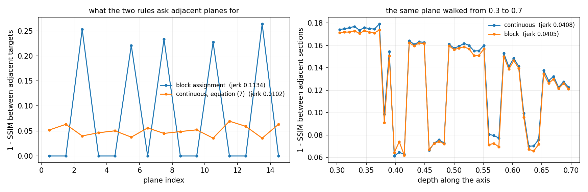
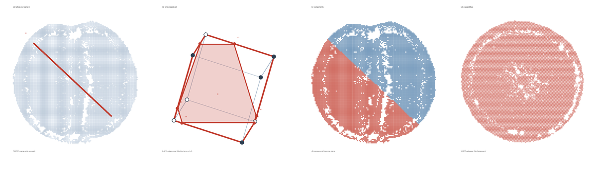
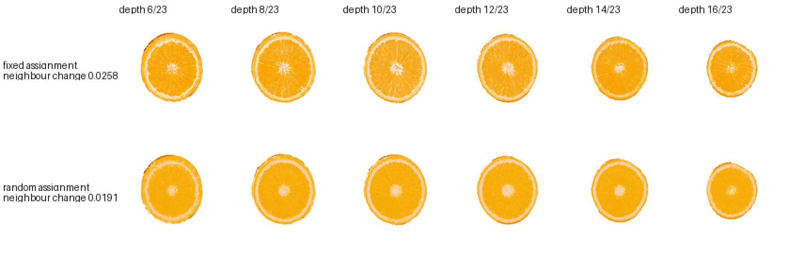
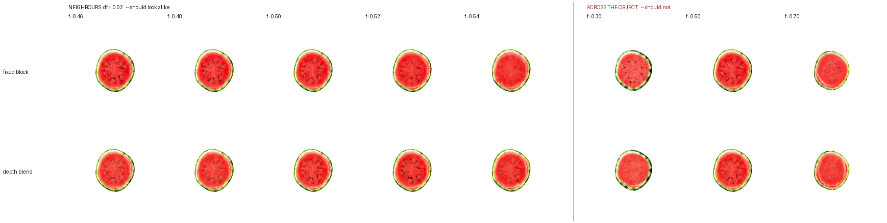
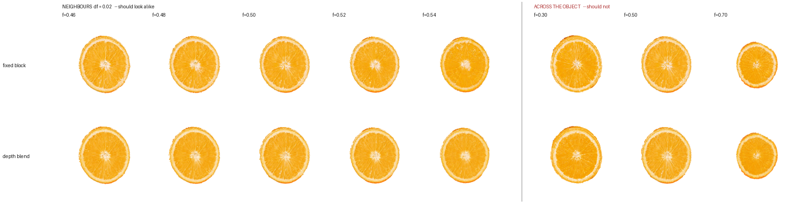
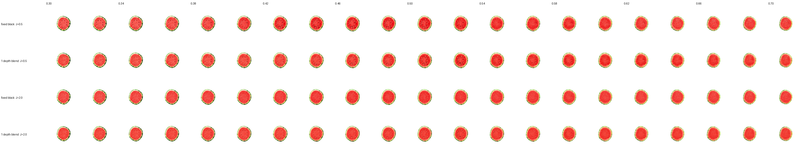

Supplementary material
Limitations, and the sections held out of the paper for length
The paper states every result; this is the detail behind them, unchanged rather than summarised. Sections here are numbered with an S so they cannot be confused with the paper's; a bare "section S3.1.2" in this document is a reference to the paper. The limitations are here too, and they are the first thing below.
Limitations
- The evidence is six objects, and they are one method's release. Every object FruitNinja released is here, which is what makes every comparison a comparison against a published result rather than a reimplementation, and it also bounds the evidence: six fruits and baked goods chosen by another group. It can show that a property holds on those objects, and it can show that a claimed property fails; it cannot establish that a margin generalises to fruit, to food, or to objects in general, and no result in the paper should be read that way.
- Two of the four runtime figures are not reported. The specification asks for initial load, single-cut update, O‑Voxel conversion and render rate. The first two are in section S3.3.4 The O‑Voxel conversion is not timed because the extension is not built on the machine the timings were taken on, and the interactive render rate is not timed because the harness fails to produce it. Neither absence is evidence either way about the cost of those operations.
- The two levers on cutting cost are unbenchmarked. A cut is about eleven seconds at the resolution used, and the face geometry is linear in the crossed cells; the labelling as implemented is not, and section S3.3.4 measures the cost as flat per total cell. An adaptive refinement of the band and a GPU formulation of the same passes are the two ways to reduce it, and neither is implemented here: the operator refines every crossed cell to the same spacing, which is what section S3.3.3 measures as one level at the cut on all twenty-four cuts, and the GPU formulation exists in the repository without a timing.
- No modulus here is measured. \(E_{\min}\) and \(E_{\max}\) are the ends of a range that an ordering of material classes is mapped onto. No absolute Young's modulus, Poisson ratio or yield stress is claimed for any material in this paper, and the stiffness figures quoted anywhere are the ends of that mapping rather than measurements of fruit.
- The tolerance to distorted references is measured only for rotation. Section 4.1.4 injects rotations up to ±30° and finds a 15% cost in DreamSim, so no break point was reached within that range and none is claimed beyond it. Specimen-to-specimen shape distortion — a section that is elliptical where the reference is round, or whose radial proportions differ — is untested. The failure mode such a reference would produce is disagreement between planes about the cells they share, resolved to one value per cell; the paper measures that quantity at 2.9% of cells and does not measure where resolving it stops working.
- The physics is a capability, not a validated solver. What is measured here is that the lattice answers the questions a solver asks: contact resolves to integer queries and closes 2,698 of 610,723 penetrations to zero on the contact slab, a material field is decomposed from the same per-cell feature, and \(\tau_s\) predicts before the first timestep whether a transfer grid can resolve the skin. What is not measured is any of the quantities a physics paper would be judged on: deformation accuracy against a reference solver, stress or stiffness transfer against an analytic solution, contact response timing, or energy behaviour over a long rollout. No comparison against an established engine is made. The simulation figures in this paper show that a cut object can be driven and that the pieces behave as separate bodies; they do not establish that the dynamics are correct, and the paper's claims about physics should be read as claims about representation compatibility.
- Cuts are unbounded planes. A piece is a global sign-code class, so a bounded incision has no expression and a curved cut approximated by \(Q\) planes shatters into up to \(2^Q\) regions rather than cutting along a curve. Peeling, tearing and freehand cutting are outside the formulation; the virtual-node construction that extends to them fits this lattice but is not implemented here.
- There is no view-dependent appearance. The decoder maps a cell's feature to a colour and takes no view direction, so specular rind, a wet cut face and translucent flesh are inexpressible rather than approximated. Every appearance number here is under the fixed illumination the references were taken in, and the storage comparison should be read as a Lambertian volume against representations that also carry an angular field.
- Route 2 is the least reproducible thing here. It has no stage in the driver and no object configuration: its three steps are run by hand against a lattice, and the radii that produced the orange and the watermelon are not written down anywhere, so only the doughnut can be rebuilt from what is published. And for two of the three objects the six views are renders of the released reconstruction, so the route that is “available always” is demonstrated end to end only on the object that never had a scan.
- One thing downstream branches, on the object rather than the route. The surface conversion colours from skin cells when they are more than a fifth of the lattice and from all cells otherwise. The skin fraction runs 13.5 to 68.2% across the quantised lattices and 27.5 to 40.8% across the generated ones, so the threshold separates objects and not routes, and the quantised orange is the only one of six below it. The claim that nothing downstream can tell which route was taken survives; the claim that this line is where it fails does not.
- The exterior costs more, before the collapse. 442,253 dual-grid voxels replace 118,142 skin Gaussians on the orange. The collapse takes that to 215,304 at \(\tau_c = 0.5\), and the same quantisation is available to either representation, so the comparison that matters is not yet run.
- The surface is faceted, and a perceptual score will say so. A dual-grid skin is one small planar patch per node, and CLIP or LPIPS against a photograph is exactly the measurement that punishes that even where the geometry is right. No perceptual number for the dual-grid exterior is quoted here, and quoting one would need the faceting addressed rather than the metric chosen.
- Cut-time detail is per cut. The write-back reaches the cells the face passed through and no others, so a plane six degrees away shows the volume as it was.
- The interior features are not retrained. The per-cell features are still the ones the Gaussian run learned; refitting them for the cube renderer flattened the orange's segment walls twice, and the criterion for "the walls survived", the angular oscillation of a section over its middle radii, is in place but the fit is not.
- Cutting is not fast. Eleven to fifteen seconds depending on which stage and which lattice; the paper's section S3.3.4 sets the four timings side by side. Where we call the cut cheap it means in operations, not in time; it is single-threaded NumPy on the CPU and the design asked for a GPU-friendly band subdivision, which is not what was built.
- Resolution bounds what the representation can hold. Occupancy is a decision per cell, so a feature narrower than a cell is either absorbed into its neighbours or forces a global refinement, and storage is linear in cells at 46 bytes each with cell count cubic in resolution. Micro-porous structure is the case this excludes: the pore network of crumb, a vessel lumen, foam. The solidity pass makes it worse deliberately, since closing seals any channel narrower than the structuring element and the fill then removes every enclosed void, so the occupancy this work builds is the complement of the exterior and preserves genus only for through-holes above the closing radius. For objects whose interior is a solid graded material, which is what is demonstrated here, that is the right trade; for objects whose interior is mostly structured air it is the wrong representation.
- No instrument here settles cut-face realism. FID and KID are computed against six photographs, where the Inception covariance has rank at most five and the metric is dominated by its own bias. CLIP image similarity is robust at that sample size but compresses every candidate and the references themselves into the top two percent of its range, and CLIP against a text prompt is at its ceiling and ranks the visibly broken arm highest. The three do not agree: two put this work ahead of a fine-tuned pipeline and one puts it behind by 0.72 of a point, while DreamSim, trained on human forced-choice judgements, puts this work 1.7 times closer to the photographs than the baseline. Improved precision and recall cannot be estimated at six references at all: the manifold radii are smaller than the gap between any render and any photograph, so every arm reads 0.00. A two-alternative forced choice against the photographs would settle directly what six automatic instruments only triangulate, and it is the single most valuable experiment this paper still owes.
- Coverage is a property of a renderer as much as of a representation. Drawing each primitive at its own footprint and drawing it through its own rasteriser give different answers, and only the second is what a viewer sees. Our coverage claim is made at 2048 px through each method's own renderer, and at 512 px no representation here is separable from any other.
- Open ends. The four-representation baseline and the interior-appearance, resolution-stability, memory and runtime families wait until the architecture is finished. Topology and collision are the two already measured.
How much of a difference is a difference
Every margin in the paper is a difference between two training runs, and a training run is not deterministic: the sampler draws, the plane schedule jitters, and the optimiser sees them in an order that depends on both. So a margin is only evidence if it is larger than what two runs of the same configuration produce. We had that pair by accident and report it, because it sets the scale for reading every other table here.
Two runs, both on the orange, both route 2, both trained on the same lattice from the same source file for the same 200 iterations with the same object configuration. They were launched as an experiment and a control, and a check afterwards showed the experimental flag never reached the code it gates — the target and the render differ at the shared axis by 0.0643 in one and 0.0647 in the other, where the flag, had it fired, would have made the first zero by construction. Nothing distinguishes the two runs but the draws. Both were then scored on the same twelve held-out cuts, at the same seed, against the same six photographs:
| measure | run A | run B | spread | margin the paper reports |
|---|---|---|---|---|
| FID | 65.3 | 60.3 | 5.0 | 29.0 |
| KID | 92.9×10−3 | 82.0×10−3 | 10.9×10−3 | 64×10−3 |
| DreamSim | 0.0686 | 0.0683 | 0.0003 | 0.0582 |
| disagreement on the shared axis | 0.0323 | 0.0320 | 0.0003 | — |
Two readings follow. The first is a floor: a FID difference of five points on this setup is what identical configurations produce, so a table that turns on four points of FID is reporting the seed. The margins the paper does report are 29 points of FID and 64 units of KID, five to six times the spread, so they survive it — but the floor is the reason those are the numbers quoted and not smaller ones.
The second concerns the choice of instrument. DreamSim's spread across identical runs is 0.0003, against the 0.0582 it reports between our cut faces and FruitNinja's: a ratio of roughly two hundred, where FID's is under six. That is a stronger argument for using a perceptual distance trained on human judgements as the primary measure than any appeal to what it was trained on, because it is measured on this pipeline rather than borrowed. It also matches the direction the rest of the evaluation went for independent reasons: FID is a distribution distance estimated here from six references, and a quantity estimated from six samples is expected to be unstable.
The pair is one sample of the run-to-run distribution and not an estimate of its variance, which would need more runs than the question is worth. It is quoted as an order of magnitude, and every margin in the paper is reported against it.
Sections held here for length
S1 Preliminaries: dual grids
A dual grid is the surface counterpart of an occupancy grid. The occupancy answers inside-or-outside per cell and its boundary is a staircase; a dual grid keeps the same cells and puts one vertex inside each boundary cell, connected to the vertices of the cells it shares a face with. Connectivity is therefore fixed by the occupancy and needs no marching table; only the positions are free, and each is placed at the minimum of the quadric its own surface planes define.
S2 What the lattice hides about its own origin
S2.1 Four properties of the cut
Four properties the cutting code has, established on quantised lattices in the previous project before generated ones existed. They are listed here for what they are; section S3.1.2 is the run that asks whether they survive a generated lattice, and where the two disagree numerically it is because they are different measurements of the same property rather than the same measurement twice.
| property | what it buys |
|---|---|
| Exact polyhedral fragments | 0.00392 against 0.00457 relative volume error, with no subdivision against ten times the leaves |
| Adaptive band refinement | 20.6% / 32.6% / 35.8% fewer leaves at levels 1 / 2 / 3, at equal error and identical piece counts |
| Several cuts at once | +77 leaves for a nearby second cut against +3,983 for an unrelated one; exact agreement with one-at-a-time |
| Cut-time super-resolution | 95.2% of the generated detail kept at one pixel per leaf, 77.4% at six |
S2.2 Both routes
Those numbers were measured when only quantised lattices existed, so they say nothing about whether the four survive a generated one. The generated lattice differs in exactly the way that could matter here, since its cells sit on the grid these algorithms index into and the quantised one's do not. Run again on both, on the orange, with the same planes:
All four transfer. Exact fragments is marginally better on the generated lattice, where the split moves by 0.000 points rather than 0.004, because its cells sit exactly on the grid the clipping indexes into.
| property | route 1, quantised | route 2, generated |
|---|---|---|
| Several cuts at once three planes, then folded back |
+101,052 and +108,591 leaves for cuts 2 and 3; 8 pieces; all-at-once identical; folds back to 849,153 of 1,157,328 | +110,152 and +113,610; 8 pieces; all-at-once identical; folds back to 894,304 of 1,215,198 |
| Adaptive band refinement against uniform, at four tolerances |
33.5% / 32.4% / 27.4% / 16.3% fewer leaves | 32.1% / 31.0% / 26.1% / 15.5% |
| Exact polyhedral fragments how far the split moves |
0.004 percentage points of the object | 0.000 |
| Cut-time super-resolution detail kept, at 256 / 512 / 1536 px |
93.4% / 77.4% / 74.6% | 100.0% / 76.1% / 73.2% |

S2.3 Material decomposition
An object decomposes into material classes without being told what they are: cluster the learned per-cell feature, merge classes whose appearance centroids agree, and an orange separates into peel, flesh, a transition and pith. What is clustered is a learned feature and a position on a lattice, so the decomposition is indifferent to whether a cell also carries a rendering primitive. On the generated topologies it finds:
| object | class | cells | mean RGB | shell fraction |
|---|---|---|---|---|
| orange | deep pulp | 130,608 (10.6%) | 0.94, 0.61, 0.03 | 0.00 |
| bright pulp | 270,913 (22.0%) | 0.98, 0.69, 0.10 | 0.00 | |
| peel | 530,696 (43.1%) | 0.93, 0.62, 0.27 | 0.63 | |
| transition | 299,095 (24.3%) | 0.96, 0.69, 0.21 | 0.01 | |
| watermelon | flesh | 169,230 (15.9%) | 0.81, 0.07, 0.09 | 0.00 |
| rind | 244,766 (23.0%) | 0.43, 0.52, 0.24 | 1.00 | |
| lighter flesh | 328,179 (30.8%) | 0.92, 0.24, 0.24 | 0.00 | |
| pith | 323,681 (30.4%) | 0.80, 0.66, 0.50 | 0.23 | |
| doughnut | crumb | 166,915 (17.7%) | 0.58, 0.42, 0.23 | 0.00 |
| lighter crumb | 253,479 (26.9%) | 0.71, 0.57, 0.39 | 0.00 | |
| icing | 365,428 (38.8%) | 0.86, 0.54, 0.48 | 1.00 | |
| pale crumb | 157,018 (16.7%) | 0.82, 0.68, 0.52 | 0.12 |


S2.4 Piece counts on synthetic shapes
Piece counts are checked on synthetic shapes whose answer is known, and two cases carry the test: a near-surface cut and a thin bridge. They test opposite failures. The thin cap is a separation the coarse grid cannot see, since every coarse centre falls on one side, and refinement has to find it. The one-cell bridge is the reverse: it is a connection that any labelling leaning on dilation or on a distance threshold will break, reporting two pieces for an object that is one.
| case | pieces | expected |
|---|---|---|
| ball, plane through the centre | 2 | 2 |
| ball, plane clear of it | 1 | 1 |
| torus, plane containing the axis | 2 | 2 |
| torus, plane across the axis | 2 | 2 |
| torus, plane above the tube | 1 | 1 |
| dumbbell, plane through the neck | 2 | 2 |
| ball, cap thinner than a coarse cell | 2 | 2 (1 without refinement) |
| thin bridge, plane clear of it | 1 | 1 |
| thin bridge, plane through it | 2 | 2 |
| thin bridge, plane along it | 2 | 2 |
S2.5 Cutting
The band the plane crosses is a surface through a volume, so it should scale as \(N^{2/3}\). Measured at one lattice resolution it is 4.0 to 10.7% of the cells, which is consistent with that and does not establish the rate; a resolution sweep would. Where several planes meet they carve slivers whose size scales with the cell; a piece below a stated threshold rejoins the neighbour it shares the most faces with, taking the doughnut's three cuts from 18 raw pieces to 8 with the smallest kept at 2,287 cells.
| object | band leaves | total leaves (this run's lattice) | pieces, one cut | pieces, three cuts |
|---|---|---|---|---|
| doughnut | 21,760 (4.0%) | 545,586 | 2 | 8 (18 raw, slivers rejoined) |
| orange | 86,776 (9.4%) | 924,252 | 2 | 8 |
| watermelon | 66,408 (10.7%) | 620,162 | 2 | n/a |
The total-leaf column is the lattice these geometry runs were made on and is not the cell count the appearance results use; the two differ by the fine level's configuration, and the doughnut's and the watermelon's are below the solid-cell counts of the paper's section S3.2.5 for that reason. The band fraction is the quantity to read here, and it is a ratio within one run.
S2.6 Cross-sections
A cut face is only as good as the volume behind it, so this is the volume drawn directly: planes swept through each object, every pixel resolved by cube lookup rather than by any renderer.

| object | all cells, before → after filling | holes, before | holes, after |
|---|---|---|---|
| orange | 877,494 → 1,059,348 | 14.9% / 8.7% / 6.6% | 0.28% / 0.02% / 0.00% |
| watermelon | 1,741,169 → 2,534,444 | 9.2% / 9.5% / 11.4% | 0.08% / 0.05% / 0.10% |
| doughnut | 797,838 → 809,318 | 10.6% / 10.7% / 11.4% | 9.5% / 8.7% / 10.2% |
This table counts every cell at both levels. Section 3.2.2 of the paper counts the coarse level alone, 759,353 to 848,021, which is why its percentage is smaller.
The fraction of each section's own area the renderer leaves unpainted, before and after the occupancy is made solid. A cube's support is exactly its cell, so a gap is a hole in the occupancy and not a coverage parameter, which is why the first column exists at all. Those holes were always there, covered by sheer density (7,959,789 primitives, a million per unit volume) rather than by any primitive's support, which at \(\sigma/h = 3\times 10^{-5}\) reaches nothing.
S2.7 The exterior surface
The cuts measure the interior. The claim that the appearance is independent of Gaussian training is a claim about the outside, and a shell can be right in every section and still be wrong where two views meet, because a section never looks at a seam. These are the six directions the painting used, drawn from the dual-grid surface. This is also what the exterior representation is for: a slice does not need it, because the rind a slice shows is the slab’s own skin cells, but the whole object does.


What remains between the O‑Voxel columns and the rasteriser is not capacity. The route-2 orange stores 1,231,312 primitives against the baseline’s 877,494, 65.8 MiB against 46.9. What was small was the use: a cell stores fourteen numbers and the first version of this renderer read the three that are colour. Of the other eleven, seven are the scale and the rotation, which is the primitive’s shape, and a shape is a reconstruction filter. On these models \(\sigma/h\) has median 0.26, so the rasteriser is not blurring across cells; what it has is anisotropy, median 116 to 1, inside them.
S2.8 Runtime
Timings on the orange, 877,494 cells, median of three. Everything except the render rate is single-threaded NumPy on one CPU core; the render rate is one card. The collision claim holds and the cutting claim does not: five million occupancy queries a second is what a floor division and a table lookup should cost, while thirteen seconds to label the pieces is not interactive.
| operation | time | rate |
|---|---|---|
| load the model from disk | 22.8 ms | |
| occupancy: close and fill | 1,696 ms | 405,606 cells/s |
| one cut: refine the band, label the pieces | 12,958 ms | |
| the cut face: exact polygons | 14,246 ms | |
| build the collision index | 151 ms | |
| label every particle by piece | 551 ms | 1,593,256 particles/s |
| one occupancy query over the particle set | 178 ms | 4,929,213 queries/s |
| O‑Voxel conversion: the whole boundary | 17,602 ms | 69,955 cells/s |
| render rate | cube volume, marching the face | Gaussian rasteriser | ratio |
|---|---|---|---|
| 512px | 6,415.6 ms 0.16 fps | 52.7 ms 18.98 fps | 122× |
| 1024px | 28,871.6 ms 0.03 fps | 81.7 ms 12.25 fps | 353× |
The conversion row matters for what a cut costs end to end. If a cut changes the exterior and the surface has to be rebuilt, 17.6 s of conversion sits on top of the 13.8 s to refine and label and the 15.0 s to build the face, on 894,304 solid cells producing 277,525 active voxels and 555,744 triangles. A cut that only exposes a new interior face does not pay it, because the cut face is the polygon of equation (20) and needs no conversion at all.
The third representation, the dual-grid exterior, is the one the method draws a whole object with, and it had no number here. It has one now, and it does not rescue the runtime story. There is no triangle rasteriser in this work: the surface is drawn by splatting points sampled on its triangles, three per triangle, which for the route-2 watermelon's 859,070 triangles is 5,154,420 samples.
| the dual-grid exterior, route 2 watermelon | ms/frame | fps |
|---|---|---|
| 512 px | 1,057 | 0.95 |
| 1024 px | 1,070 | 0.93 |
Single-threaded NumPy, median of three, and flat in resolution because the cost is the sample count and not the pixel count. At 512 px it is six times faster than marching the volume and twenty times slower than the Gaussian rasteriser; at 1024 px, where the march scales with pixels and this does not, it is twenty-seven times faster and thirteen times slower. A real triangle rasteriser would change this number by orders of magnitude and none is implemented, so what the table establishes is where the cost sits and not what the representation could cost.
S2.9 Summary of differences
Everything in the table is measured here. Both prior methods release models and both were run: FruitNinja's in the frame our cameras already use, GaussianFluent's in its own frame with the camera distance matched and the upright axis chosen in its favour. FruitNinja was also reproduced from its own code with the stock checkpoint, which is the arm its published results do not cover. Its fracture and material solver are not reproduced, and GaussianFluent's own numbers for those are what its paper states.
| FruitNinja | GaussianFluent | this work | |
|---|---|---|---|
| what holds the hidden interior | opaque atomic Gaussians | densified Gaussians, generatively guided | a cube occupancy grid |
| what draws a newly exposed face | the same Gaussians | the same Gaussians | a dual-grid surface, or a march into the volume |
| primitives, watermelon | 7,959,789 | 1,381,100 | 1,741,169 route 1 / 1,065,856 route 2 |
| stored, everything the method needs | 425.1 MiB | 310.8 MiB | 163.5 MiB route 1 / 62.6 MiB route 2 |
| \(\rho = \sigma/h\) | 3.1e−5 (points, not blobs) | its spacing is not published | 0.26 for the Gaussians a cell carries; not applicable to the cube volume, which tiles |
| needs a fine-tuned diffusion model | yes, and it is not released | no | no |
| held-out cuts through this evaluator, orange | FID 102.2 / 269.6 | no orange released | 74.1 to 91.5 / 213.5 to 286.8 |
| held-out cuts through this evaluator, watermelon | FID 182.0 / 211.0 | FID 170.2 / 177.5 | 180.9 to 183.5 / 236.7 to 262.8 |
| the same pipeline with a stock checkpoint | FID 378.7 / 511.6 (our reproduction) | needs none | the arm once entered here at FID 90.1 / 213.5 is photograph-supervised; see the paper's section S3.1.7 |
| breaking into pieces | not addressed | fracture by continuum damage | connected components on face adjacency, one solver per piece |
| mixed materials | not addressed | the paper's subject | classes from the learned feature, stiffness by an ordering |
| physics | not addressed | CD‑MPM, brittle fracture | MPM, piece relabelling, occupancy collision, per-piece solvers |
| cut geometry | not addressed | damage field | exact planar polygons, no approximation term |
S2.10 Held-out cuts
Twelve cuts per model at depths and azimuths training never sampled, scored against the photographs. Six are transverse, across the object's upright axis, and six longitudinal, through it. The O‑Voxel columns register a renderer with the file that chooses the planes, so the planes, depths, cameras and order are identical by construction and only what draws the picture differs. The doughnut has one reference image per family, too few for a distribution, so it is asked instead whether every held-out transverse section still reads as an annulus.
Each score below is computed on six renders against six to twenty-three photographs. At that sample size the Inception covariance is rank-deficient and FID is dominated by its own bias [36, 37]; the photograph sets score 46.3 and 60.4 in FID against themselves split in half. On PSNR, SSIM and LPIPS the four route and renderer combinations differ by 0.29 dB, 0.010 and 0.019 on the orange and by 0.11 dB, 0.004 and 0.008 on the watermelon, and all four sit about 4.5 dB and 0.21 LPIPS below the photographs measured against each other. Differences of a few FID points are therefore reported and not claimed; the geometric results are what is argued from.

| transverse | route 1 (3DGS), the baseline | route 2 (3DGS) | route 1 (cube) | route 2 (cube) | |
|---|---|---|---|---|---|
| orange | FID | 86.4 | 66.5 | 130.5 | 107.9 |
| KID | 125.0e-3 | 88.7e-3 | 208.4e-3 | 158.8e-3 | |
| CLIP | 31.6 | 31.7 | 30.9 | 32.1 | |
| watermelon | FID | 187.4 | 180.9 | 188.3 | 167.5 |
| KID | 233.2e-3 | 226.3e-3 | 234.9e-3 | 206.9e-3 | |
| CLIP | 32.3 | 31.9 | 32.5 | 32.2 | |
| doughnut | annulus | 6/6 | 6/6 | 6/6 | 6/6 |
| The doughnut has no released reconstruction to quantise, so its “route 1” is a lattice built from a generated mesh by the older shell-and-fill route, a third path kept because it is what the baseline was established on. | |||||

| longitudinal | route 1 (3DGS), the baseline | route 2 (3DGS) | route 1 (cube) | route 2 (cube) | |
|---|---|---|---|---|---|
| orange | FID | 147.6 | 247.3 | 292.6 | 370.2 |
| KID | 175.3e-3 | 303.7e-3 | 437.3e-3 | 585.4e-3 | |
| CLIP | 31.8 | 34.2 | 31.1 | 33.8 | |
| watermelon | FID | 266.0 | 244.4 | 314.9 | 263.5 |
| KID | 331.9e-3 | 300.9e-3 | 413.6e-3 | 320.1e-3 | |
| CLIP | 33.4 | 33.7 | 33.6 | 34.7 |
One statistic separates the two routes where FID does not, and it is given here for what it is rather than as a result: the mean blue channel over the pulp region of a section, on the orange, which is a proxy for how grey the flesh reads. Closer to the photographs is better, and route 2 matches them transversally and overshoots longitudinally.
| orange, pulp, mean blue channel | photographs | route 1 | route 2 |
|---|---|---|---|
| transverse | 0.149 | 0.168 | 0.148 |
| longitudinal | 0.179 | 0.221 | 0.234 |
S2.11 Reference-based metrics
PSNR, SSIM and LPIPS on the same cuts are in section S3.1.7, computed on a hundred planes rather than six and against the same references. They are not repeated here: at six renders the four route and renderer combinations differ by 0.29 dB, 0.010 SSIM and 0.019 LPIPS on the orange and by less than half that on the watermelon, and all four sit about 4.5 dB and 0.21 LPIPS below the photographs measured against each other. Nothing in that spread is a result.
S3 Experiments, in full
The body reports the four results section 4 stands on. This is the section as it was measured: every sweep, every per-object sheet, and the engineering validations that guarantee the geometry rather than demonstrate the contribution. Its tables and figures are numbered S1 onward and are referred to by those numbers from the body.
The validation is organised along four axes, and which of them this paper fills and which it does not. Perceptual fidelity under loose, unaligned references is section S3.1, and it is the axis the paper's main claim rests on. Geometric precision of the cut face — planarity, area error, unpainted fraction, absence of gaps — is sections 4.1.2 and 4.3.2. Storage and runtime is section S3.3, and it contains a result in each direction: contact queries run at 5.2 million per second, and a cut takes seconds rather than milliseconds. Physics is section S3.2, and it is the axis that is not filled: contact is measured and a resolvability criterion is derived and swept, but there is no comparison against a reference solver, no deformation or stress error, no fracture — which this formulation does not implement at all — and no interactive frame rate. No physics benchmark is reported; the limitations say so in the same words.
The organising axis is the two routes, a lattice quantised from a scan and a lattice generated from a field and skinned from six views, because after the second step nothing downstream can tell which was taken, so any result that separates them is a result about how an object is reached rather than about what happens to it afterwards. Objects are chosen by whether a released model of a prior method exists for them, so that every comparison is against a published result rather than a reimplementation. Where a comparison comes out against this work it is reported in the same place as the ones that do not. Comparisons against other work sit on the same footing, and the one exception that used to stand here is gone. Route 1 quantises a released model, and it used to take that model's interior with it: every coarse cell arrived carrying the colour of the primitives that fell in it, which on a fine-tuned baseline is a diffusion model's guess about the inside of a fruit. It now takes the shape and the exterior and nothing else. The interior starts at a flat 0.5 in every channel — the value route 2's lattice starts at, measured, with zero spread — so on both routes every structure inside the object was put there by the photographs.
What that costs, since it is not free. Scored against the photographs that supervised them, the flat start is 0.0026 worse on the orange, 0.0166 on the watermelon, 0.0308 on the bread and 0.0373 on the apple, and the ordering is the point: the cost is smallest where the photographs constrain the interior most and largest where they constrain it least, which is what an initialisation carrying real information looks like when it is taken away. It is taken away anyway, and not as a trade. A scanner cannot see inside an object, so a run that begins from an interior is answering an easier question than the one posed; the numbers above are what it costs to answer the posed one. The older behaviour is retained behind a switch, so the difference can be reproduced.
Table S2
| the comparison | what it answers | its figure |
|---|---|---|
| route 1 against route 2 | cost of a generated topology | held-out cuts, transverse and longitudinal |
| the six views against the shell they made | projection accuracy | three per-object sheets |
| this work against FruitNinja and GaussianFluent | cost of holding a hidden volume | the same slab, four ways |
| this work against FruitNinja's released models | the cut a viewer actually sees | the same held-out planes, five rows |
| occupancy alone against occupancy and the cut plane | whether contact is real | the contact slab at four separations |
| route 1 against route 2 | dependence on object-specific supervision | the same cuts, both ways |
| the cube renderer against the rasteriser | representation against renderer | the same cuts, four columns |
| uniform material against a field | solver-resolvable shell thickness | the section by class and by stiffness |
S3.1 Comparison with prior work
Two published methods fill an object's interior with Gaussian primitives so that a cut reveals something: FruitNinja [3], which supervises the interior with depth-conditioned diffusion, and GaussianFluent [23], which densifies it under generative guidance and then simulates fracture. They are compared here on four things: what the interior costs to hold, what it looks like on terms none of the three methods chose, what a held-out cut scores through one evaluator, and what each method depends on. FruitNinja's published interiors come from a diffusion model fine-tuned on the object's own photographs, and that model is not released; GaussianFluent needs no fine-tuned model, and neither does this work, so the reproduction anyone can perform is the one without it.
S3.1.1 The same object, from the same source file
FruitNinja's released watermelon is redistributed by GaussianFluent [23]: the same 541,266,069 bytes and the same MD5 as the model route 1 quantises. The two representations can therefore be compared on the same object, from the same source file.
Table S3
| watermelon | FruitNinja, as released | this work, route 1 | |
|---|---|---|---|
| primitives / cells | 7,959,789 | 1,741,169 | 4.6× fewer |
| as stored, cells only, index implicit | 425.1 MiB | 56.5 MiB | 7.5× less |
| with the sparse index the lattice needs | 425.1 MiB | 76.4 MiB | 5.6× less |
| with the dual-grid exterior as well | 425.1 MiB | 163.5 MiB | 2.6× less |
| opacity | 1.0000 at the median and the 10th percentile | n/a | opaque by construction |
| support scale \(\sigma\) | 1.11e−7 | n/a | |
| spacing \(h\) | 0.0036 | 0.0172 | |
| \(\rho = \sigma/h\) | 3.1e−5 | 0.26 as splatted; n/a as a cube volume | |
| primitives per unit volume | 1,029,854 | 137,000 |
S3.1.2 The cut face
Two claims are made here and the second is the one a cut exposes. The first is that a cut face drawn from a cube volume can be stated; the second is that it looks more like the fruit. The second is measured under leave-one-out, at 0.1006 against 0.1474 on all six folds, and goes first.
The comparison turns on what the supervision is. Both methods are given the same asset — photographs of the fruit's cross-sections, six of each family. FruitNinja spends them on a fine-tuning run, obtaining a depth-conditioned diffusion model specific to that fruit, and distils that model into the interior; the model is not released, so reproducing their result means reproducing the fine-tuning. We use the images as the target directly. Nothing is trained that is not the object itself, nothing generative runs in the loop, and the comparison below is therefore not between two amounts of supervision but between two ways of spending the same six photographs.
Holding out the photograph, not just the plane. The objection to supervising a volume with six images is that the volume may simply be storing them. Held-out planes do not answer it: a plane the training never used still cuts a fruit whose every reference the training did. So the reference is held out instead. Six models are trained, each on five of the six transverse photographs and five of the six longitudinal, and each is scored against the one transverse photograph its own run never saw. FruitNinja's released model is scored against the same held-out photograph in the same batch, without retraining anything — its interior already exists, and the diffusion model that produced it was fine-tuned on all six, the held-out one included. The comparison is therefore tilted against us: on every fold, ours is the only model that has not seen the image it is being measured against.
Table S4
| orange, transverse DreamSim ↓, held-out plane and held-out photograph | ours, that photograph held out | FruitNinja, released, fine-tuned on it | ours, trained on all six |
|---|---|---|---|
| fold 0 | 0.1090 | 0.1713 | 0.0830 |
| fold 1 | 0.1049 | 0.1404 | 0.0885 |
| fold 2 | 0.0841 | 0.1325 | 0.0769 |
| fold 3 | 0.1085 | 0.1696 | 0.0831 |
| fold 4 | 0.0862 | 0.1403 | 0.0729 |
| fold 5 | 0.1108 | 0.1303 | 0.0848 |
| mean ± sd | 0.1006 ± 0.0121 | 0.1474 ± 0.0183 | 0.0815 ± 0.0057 |
The paired metrics on the same folds. PSNR, SSIM and LPIPS are computed on the same six folds against the same held-out photograph.
Table S5
| orange, mean over six leave-one-out folds | PSNR ↑ | SSIM ↑ | LPIPS ↓ | DreamSim ↓ |
|---|---|---|---|---|
| this work | 14.70 dB | 0.7377 | 0.4262 | 0.1006 |
| FruitNinja, released | 13.87 dB | 0.7461 | 0.4837 | 0.1474 |
Rendered as the leave-one-out batch: 40 cuts per fold, each fold scored against the one photograph its own run never saw. DreamSim values in this paper come from three render batches taken at different times; a value is comparable with others in its own table and differs by up to 0.006 from the same arm in another.
All four agree in direction, and the size of each margin follows from what each instrument compares. PSNR and SSIM are pixel-aligned comparisons, and a held-out cutting plane is not a photograph of any particular slice: there is no correspondence between a plane at an arbitrary depth and an image of a different fruit cut somewhere else, so what these measure is largely that both models produce an orange disc of about the right size and colour. Fourteen decibels is what two photographs of different oranges score against each other, so the scale here is set by the protocol rather than by either method. LPIPS compares features rather than pixels and separates the two by more; DreamSim, trained on human choices between image pairs, separates them by most and is the instrument this paper reads.
Two things follow, and the second is the one the objection was about. The first is the margin: 1.53 times closer to a photograph our model was not allowed to fit and theirs was, winning on all six folds individually and by more than the fold-to-fold spread of either column. The second is the third column. Holding the photograph out costs 0.0191 of DreamSim — 0.1006 against 0.0815, on the same references and the same procedure, the only difference being whether the run had seen the image. That is 1.6 times the spread across folds, against a gap to the baseline of 0.047 — so the sixth photograph is worth 41% of that margin, not 8%. This is a weaker statement than the one that stood here, which followed from a subtraction that was wrong: 0.1006 against 0.0815 is 0.0191 and not 0.0044. What survives is that the fold-trained models still beat a generator fine-tuned on the photograph being scored, on every fold; what does not survive is the claim that a reference is nearly free, and with it the argument that the volume cannot be storing its references.

The same held-out plane, three ways, with the box magnified beside each section. Both arms rendered the same planes under the same seed, so a row differs only in what filled the volume; the left column is a photograph of a real cut orange and is not that plane, since no photograph is. What the magnification is for: the difference between a section that has segment membranes and one that has a smooth gradient is a few tens of pixels wide and is invisible at the size a section is normally shown. The released model resolves the core as a dark blob with a blown-out surround; the membranes it draws do not reach the rind. The photograph's sections fill more of their frame than the renders do, which is a framing difference and not a result.
Not re-measured. The models on this page were retrained after the exterior and the lattice were corrected. This table compares against arms — released models, other folds, other settings — that have not been re-run, so re-scoring only our column would mix two pipelines in one table. It is left as it was measured and marked rather than partially updated.
Table S6
| orange, transverse FID ↓, 100 held-out planes, references in-sample on both sides | |
|---|---|
| FruitNinja, released model, supervised by a diffusion model fine-tuned on this fruit | 102.2 |
| this work, route 1 | 91.5 |
| this work, route 2 | 74.1 |
| the photographs against each other | 46.3 |
Twenty-eight points of FID closer to the photographs than a method whose interiors were generated by a model fine-tuned on those photographs, on supervision that is those photographs used directly. The planes are held out; the reference images are not, on either side — ours are the training target and the baseline's fine-tuned its model — so the comparison is between two ways of spending the same six images and not between one method that has seen them and one that has not, and the leave-one-out study above has already removed it from our side alone.
One instrument does not support the result, and it is reported with the rest. FID at six references is dominated by its own bias, so we scored the same renders three ways:
Not re-measured. The models on this page were retrained after the exterior and the lattice were corrected. This table compares against arms — released models, other folds, other settings — that have not been re-run, so re-scoring only our column would mix two pipelines in one table. It is left as it was measured and marked rather than partially updated.
Table S7
| orange, transverse, out-of-sample rows only | DreamSim ↓ | FID ↓ | KID ↓ | CLIP‑I ↑ | CLIP‑T ↑ | prec / rec |
|---|---|---|---|---|---|---|
| FruitNinja, released model | 0.1326 | 102.2 | 171±27 | 97.64 | 24.64 | 0.00 / 0.00 |
| FruitNinja, stock checkpoint | 0.2697 | 378.7 | 667±103 | 90.89 | 25.13 | 0.00 / 0.00 |
| this work, route 1, photographs as the target | 0.0744 | 90.1 | 136±27 | 96.92 | 23.24 | 0.00 / 0.00 |
| this work, route 2, photographs as the target | 0.0794 | 73.2 | 107±33 | 96.92 | 24.28 | 0.00 / 0.00 |
| the photographs against each other | 0.0424 | 46.3 | n/a | 98.48 | 24.62 | 1.00 / 0.33 |
Six references will not support a distribution, so rather than argue about FID we scored the same renders with every instrument that seemed defensible and report all of them. Four are informative and two are not.
DreamSim is the one to read. It is a perceptual distance trained on human two-alternative forced choice judgements, which is precisely the judgement "does this cut face look more real" asks for, and unlike the others it was built for that rather than repurposed. On this object it puts this work at 0.0744 and 0.0794 against the released model's 0.1326, roughly 1.7× closer to the photographs and about halfway between that model and the photographs' own agreement with each other at 0.0424. FID and KID order the arms the same way, by 29 points and by about one and a half combined standard deviations.
Run on every object and every arm, it says the same thing each time, and on the watermelon it reverses the one result that had gone against this work:
Not re-measured. The models on this page were retrained after the exterior and the lattice were corrected. This table compares against arms — released models, other folds, other settings — that have not been re-run, so re-scoring only our column would mix two pipelines in one table. It is left as it was measured and marked rather than partially updated.
Table S8
| DreamSim to the nearest photograph ↓ | orange | watermelon | doughnut |
|---|---|---|---|
| the photographs against each other | 0.0424 | 0.0670 | one reference |
| this work, route 2 | 0.0794 | 0.1674 | 0.1145 |
| this work, route 1 | 0.0759 | 0.1750 | 0.1178 |
| FruitNinja, released | 0.1326 | 0.2211 | no released model |
| GaussianFluent, released | no orange released | 0.3278 | no released model |
| FruitNinja, stock checkpoint | 0.2697 | not run | not run |
Both objects, both baselines, the same direction. On the watermelon this work is 1.3× closer to the photographs than FruitNinja and 2.0× closer than GaussianFluent, which is the model that took the best FID on that object. The two instruments rank it differently. GaussianFluent's watermelon is a different specimen whose seeds are elongated along one direction and whose pith reads thicker than in the photographs, features a distribution over sections is less sensitive to than a paired perceptual distance is.
The doughnut has one appearance number here. It has one reference photograph per family, which is why every distribution metric in this paper skips it and why its only previous score was a topological check that a featureless grey torus would also pass. A pairwise perceptual distance needs one reference, so the object the paper leans on for non-convex topology and for the whole physics section is no longer unmeasured on appearance.
Against that, CLIP image similarity puts FruitNinja 0.72 of a point ahead on a scale where every candidate and the references themselves fall between 96.9 and 98.5, so it is discriminating inside two percent of its range. CLIP against a text prompt ranks the stock-checkpoint arm highest of all, the one with brown flesh and crusted segment walls, which is the clearest available demonstration that it does not measure what is in dispute. And improved precision and recall cannot be estimated at all here: with six references the manifold radii are smaller than the gap between any render and any photograph, so every arm reads 0.00 and the metric returns no information rather than a low score.
So: three instruments favour this work, one of them the one built for human judgement; one favours the baseline marginally on a compressed scale; one is at its ceiling; one is unestimable. That is not a proof, and a two-alternative forced choice against the photographs would settle it properly, which the limitations list as owed. It is enough to say that a lattice supervised without any photograph of the object produces a cut face 1.53 times closer on DreamSim than a pipeline whose interiors came from a diffusion model fine-tuned on exactly those photographs, and by the human-aligned measure, more so.
The instrument matters on the watermelon and the two disagree. On FID this work is level with FruitNinja at 180.9 against 182.0 and behind GaussianFluent's 170.2; on DreamSim it is ahead of both, 0.167 against 0.221 and 0.328. We read the perceptual pairing as the answer and give the reason in section S3.1.2 above. The orange's photograph-supervised rows are in-sample and are not a comparison at all.
A cut face drawn from a cube volume stays closed at every resolution; a cut face drawn from splatted primitives comes apart as the viewer looks closer. At 2048 px, the scale at which a cut is inspected, GaussianFluent's section is 38.73% background and FruitNinja's is 2.37%, while the same lattice drawn as a volume is 0.07%. That is a factor of 550 against one baseline and 34 against the other, and it is not a tuning result: a cell's support is the cell, so a pixel either falls inside an occupied one or it does not, at any zoom, with nothing to set.
A splatted interior defines no cut-face planarity, area or extent, so none can be reported for it. It has the primitives that lie near the plane, so the surface a viewer sees is a rendering artefact of their density and support, and no statement can be made about it: not that it is planar, not what its area is, not where its boundary lies. Here the face is the convex polygon of equation (11), one per crossed cell, and the statements follow by construction. Every vertex satisfies the plane equation to machine epsilon on an oblique off-grid plane, and the area error against a closed form falls from 0.97% to 0.09% as the lattice refines, so the only error in a cut is the voxelised silhouette, which falls with \(h\). Neither baseline can be measured on that axis at all, which is the difference this paper is about.
What each primitive covers
Storage says what each costs, not what each produced. Every method has its own frame, scale and renderer, so a comparison of the interiors routes through none of them: for each model, the plane through its own centroid, the primitives within a slab of half-width 1% of its own extent, so 2% thick, projected orthographically, normalised by its own projected radius, opaque and nearest-first, which all three are, at median and tenth-percentile opacity 1.0000.

The same slab through the same fruit, four ways, with every primitive drawn at its own footprint — \(\sigma\) for a Gaussian, \(h\) for a cell. The footprints are not comparable in the way the word suggests: measured off the released files, FruitNinja’s median is 1.09e−07 and GaussianFluent’s 1.39e−09 against a 98th-percentile extent of 0.88, while a cell here is 8.61e−03. Both released models also carry a single constant opacity across every primitive — 10000 and 20. So what fills those two volumes is not overlapping Gaussians but points of essentially no size rendered as impulses, four orders of magnitude smaller than the spacing they sit on, and that is what the salt-and-pepper in Figure S7’s magnification is.
Through each method's own renderer, at one size
Measured on the images each method's own rasteriser produced, over the same hundred held-out transverse cuts at 512 px. At this size the released models are close, which is why a single image size settles nothing:
Table S9
| unpainted inside the section, own rasteriser, 100 cuts | watermelon | orange |
|---|---|---|
| FruitNinja, released model | 0.21% | 0.90% |
| FruitNinja, stock checkpoint | not run | 11.40% |
| GaussianFluent, released model | 0.10% | no orange released |
| this work, route 1 | 0.17% | 0.18% |
| this work, route 2 | 0.00% | 0.01% |
The one row that is not under a percent is the stock-checkpoint reproduction, at 11.40%, : without the fine-tuned model the supervision leaves the interior sparse as well as brown, so the same collapse shows in coverage and in FID.
Two things qualify that table. Every row in it, ours included, is a Gaussian render: a route-2 cell carries fourteen numbers and is splatted like any other primitive, at a median \(\rho\) of 0.26, which the sweep below shows is inside the window where a Gaussian set pays little for coverage. So this is not yet a comparison between a cube and a Gaussian: at this image size every row is a Gaussian render inside the window where a Gaussian set pays little for coverage, and no claim about a cube's support can rest on it.
Over resolution, which is where it separates
A coverage number at one pixel count says nothing. Swept over resolution, on the watermelon, six transverse cuts per cell, with the cube volume rendered by cube lookup rather than by splatting and with supersampling off, so that every row is one sample per pixel. That last point is not incidental: the cube march defaults to two-by-two supersampling, and measuring it that way against Gaussian rows that get one sample gives the cube four times the sample density at the resolution where the argument is made. With supersampling on it reads 0.02 / 0.05 / 0.06% instead of the figures below, which is a small difference and would have been an unfair one. The row above is a hundred cuts at 512 px and these are six at each of three sizes; they are separate experiments and the counts are given so they are not read as one:
Table S10
| unpainted inside the section, watermelon | 256 px | 1024 px | 2048 px |
|---|---|---|---|
| FruitNinja, released model (3DGS) | 0.13% | 0.39% | 2.37% |
| GaussianFluent, released model (3DGS) | 0.05% | 2.03% | 38.73% |
| this work, route 2, splatted (3DGS) | 0.00% | 0.45% | 3.32% |
| this work, route 2, as a cube volume | 0.04% | 0.07% | 0.07% |

The same held-out plane of the watermelon at 2048 px, each released model through the same cutter, with a box of its own section magnified beside it. What the magnification shows is what each representation is made of: GaussianFluent leaves white between its primitives, FruitNinja’s flesh carries salt-and-pepper over a saturated red, and the splatted lattice draws a continuous fibre with the seeds whole. A fourth row, the same section drawn as a cube volume, is withdrawn: the renderer that produces it is under-drawing transverse sections by half their silhouette, which is recorded with the tool, and a picture from a renderer with a known defect is not evidence about a representation.
Coverage from a splatted representation is resolution-dependent for every model including ours: at 256 px they are all under two tenths of a percent and indistinguishable, and by 2048 px GaussianFluent's section is 39% background (32.9 to 49.5 across the six cuts), FruitNinja's 2.4% (1.5 to 3.4) and our own splatted lattice's 3.3% (2.5 to 3.8), against the cube volume's 0.07% (0.06 to 0.09). The cube volume does not move, 0.04% to 0.07% over three octaves, because a cell's support is the cell and a pixel either falls inside an occupied one or does not. What a Gaussian buys with enough primitives at a chosen zoom, a cube has by construction at every zoom, and that follows from what a cell is rather than from a number that happened to come out well. It is measured on one object at three image sizes, on six cuts each, and the other two objects and the intervening sizes are not run.
Table S11
| watermelon | FruitNinja | GaussianFluent | this work, route 1 | route 2 |
|---|---|---|---|---|
| primitives / cells | 7,959,789 | 1,381,100 | 1,741,169 | 1,065,856 |
| stored, cells only | 425.1 MiB | 310.8 MiB | 56.5 MiB | 34.6 MiB |
| stored, with the sparse index and the exterior surface | 425.1 MiB | 310.8 MiB | 163.5 MiB | 62.6 MiB |
| higher-band SH coefficients | 0 | 45 (76% of its bytes) | 0 | 0 |
| stored at spherical-harmonic degree 0, matched fields | 425.1 MiB | 73.8 MiB | 163.5 MiB | 66.5 MiB |
| support \(\sigma\) / cell \(h\) | 1.11e−7 | 1.35e−9 | 0.0172 | 0.0172 |
| that, against one pixel in the slab figure | 47,053× smaller | 5,067,762× smaller | 3.3 pixels across | 3.3 pixels |
| primitives in the slab | 256,696 | 57,289 | 51,763 | 34,587 |
| unpainted at each primitive's own footprint (what a primitive covers, not what a renderer draws: it charges a Gaussian its \(\sigma\) and credits a cell its \(h\), and our cells carry Gaussians at \(\sigma \approx 0.26h\)) | 20.5% | 46.7% | 5.7% | 6.1% |
| unpainted, own rasteriser, 512 px | 0.21% | 0.10% | 0.17% | 0.00% |
| unpainted, own rasteriser, 2048 px | 2.37% | 38.73% | not run | 3.32% |
| the same lattice as a cube volume, 2048 px | n/a | n/a | not run | 0.07% |
S3.1.2.1 Then enlarge the Gaussians: what \(\rho\) actually costs
Table S12
Holes, as a percentage of the section.
| \(\rho = \sigma/h\) | |||||||
|---|---|---|---|---|---|---|---|
| object, image size | 0.25 | 0.50 | 0.75 | 1.00 | 1.50 | 2.00 | 3.00 |
| apple, 512 px | 0.417% | 0.350% | 0.273% | 0.206% | 0.107% | 0.082% | 0.025% |
| apple, 1024 px | 0.426% | 0.377% | 0.299% | 0.224% | 0.121% | 0.084% | 0.027% |
| apple, 2048 px | 0.411% | 0.367% | 0.287% | 0.217% | 0.116% | 0.081% | 0.025% |
| bread, 512 px | 0.032% | 0.000% | 0.000% | 0.000% | 0.000% | 0.000% | 0.000% |
| bread, 1024 px | 0.084% | 0.000% | 0.000% | 0.000% | 0.000% | 0.000% | 0.000% |
| bread, 2048 px | 0.104% | 0.000% | 0.000% | 0.000% | 0.000% | 0.000% | 0.000% |
| cake, 512 px | 0.758% | 0.010% | 0.000% | 0.000% | 0.000% | 0.000% | 0.000% |
| cake, 1024 px | 1.134% | 0.012% | 0.000% | 0.000% | 0.000% | 0.000% | 0.000% |
| cake, 2048 px | 1.264% | 0.013% | 0.000% | 0.000% | 0.000% | 0.000% | 0.000% |
| doughnut, 512 px | 0.000% | 0.000% | 0.000% | 0.000% | 0.000% | 0.000% | 0.000% |
| doughnut, 1024 px | 0.002% | 0.000% | 0.000% | 0.000% | 0.000% | 0.000% | 0.000% |
| doughnut, 2048 px | 0.009% | 0.000% | 0.000% | 0.000% | 0.000% | 0.000% | 0.000% |
| orange, 512 px | 0.139% | 0.000% | 0.000% | 0.000% | 0.000% | 0.000% | 0.000% |
| orange, 1024 px | 0.271% | 0.001% | 0.001% | 0.000% | 0.000% | 0.000% | 0.000% |
| orange, 2048 px | 0.330% | 0.001% | 0.001% | 0.000% | 0.000% | 0.000% | 0.000% |
| watermelon, 512 px | 0.000% | 0.000% | 0.000% | 0.000% | 0.000% | 0.000% | 0.000% |
| watermelon, 1024 px | 0.006% | 0.000% | 0.000% | 0.000% | 0.000% | 0.000% | 0.000% |
| watermelon, 2048 px | 0.010% | 0.000% | 0.000% | 0.000% | 0.000% | 0.000% | 0.000% |
The \(\rho\) at which an object's holes close is a property of the object rather than a constant: the watermelon, the doughnut and the bread are at 0.000% by \(\rho = 0.50\), the cake by 0.75 and the orange by 1.00, and the apple never reaches it — 0.025% of its section is still empty at \(\rho = 3.00\).
Blending excess: what a primitive's support adds at a material boundary over what it adds away from one.
| \(\rho = \sigma/h\) | |||||||
|---|---|---|---|---|---|---|---|
| object, image size | 0.25 | 0.50 | 0.75 | 1.00 | 1.50 | 2.00 | 3.00 |
| apple, 512 px | +0.0362 | +0.0410 | +0.0419 | +0.0462 | +0.0626 | +0.0815 | +0.1103 |
| apple, 1024 px | +0.0505 | +0.0654 | +0.0662 | +0.0724 | +0.0987 | +0.1295 | +0.1633 |
| apple, 2048 px | +0.0615 | +0.0814 | +0.0822 | +0.0905 | +0.1252 | +0.1648 | +0.1759 |
| bread, 512 px | n/a | n/a | n/a | n/a | n/a | n/a | n/a |
| bread, 1024 px | n/a | n/a | n/a | n/a | n/a | n/a | n/a |
| bread, 2048 px | +0.0330 | +0.0389 | +0.0396 | +0.0505 | +0.0630 | +0.0750 | +0.0738 |
| cake, 512 px | n/a | n/a | n/a | n/a | n/a | n/a | n/a |
| cake, 1024 px | +0.0889 | +0.0592 | +0.0563 | +0.0606 | +0.0426 | −0.0419 | −0.2297 |
| cake, 2048 px | +0.0961 | +0.0832 | +0.0886 | +0.0962 | +0.0880 | +0.0317 | −0.1191 |
| doughnut, 512 px | n/a | n/a | n/a | n/a | n/a | n/a | n/a |
| doughnut, 1024 px | −0.0058 | −0.0023 | −0.0019 | −0.0028 | +0.0067 | +0.0128 | +0.0220 |
| doughnut, 2048 px | −0.0108 | +0.0023 | −0.0006 | −0.0028 | +0.0042 | +0.0117 | +0.0259 |
| orange, 512 px | +0.0474 | +0.0541 | +0.0510 | +0.0410 | +0.0286 | +0.0361 | +0.0502 |
| orange, 1024 px | +0.0184 | +0.0289 | +0.0325 | +0.0347 | +0.0357 | +0.0368 | +0.0341 |
| orange, 2048 px | +0.0162 | +0.0331 | +0.0347 | +0.0353 | +0.0359 | +0.0388 | +0.0394 |
| watermelon, 512 px | n/a | n/a | n/a | n/a | n/a | n/a | n/a |
| watermelon, 1024 px | +0.0378 | +0.0517 | +0.0548 | +0.0560 | +0.0549 | +0.0532 | +0.0543 |
| watermelon, 2048 px | +0.0060 | +0.0331 | +0.0369 | +0.0401 | +0.0431 | +0.0422 | +0.0418 |
The excess is a difference against the region away from a boundary, so it is undefined where the section is entirely boundary — at 512 and 1024 px five of these sections are 100.0% boundary and the away term has nothing to average. Where it is defined it does not rise with \(\rho\) on the orange, the watermelon or the doughnut, and it does rise on the apple and the bread; on the cake it turns negative past \(\rho = 1.5\), where the support is wider than the features away from the boundary as well.
Holes and the blending excess below \(\rho = 0.25\), on the three objects the earlier sweep covered, at one image size.
| \(\rho = \sigma/h\) | orange | watermelon | doughnut | |||
|---|---|---|---|---|---|---|
| holes | blending | holes | blending | holes | blending | |
| 0.0001 | 44.7% | −0.09 | 16.5% | −0.07 | 44.4% | −0.02 |
| 0.01 | 44.4% | −0.09 | 16.3% | −0.07 | 44.2% | −0.02 |
| 0.05 | 37.1% | −0.10 | 11.8% | −0.06 | 38.7% | −0.02 |
| 0.10 | 17.5% | −0.09 | 2.6% | −0.05 | n/a | n/a |
The trade-off this work avoids by construction, measured on the collapse sweep: the dual grid trades node count against surface error monotonically, so a point on that curve is chosen rather than found. The support scale is not drawn beside it, because it is not one curve — the \(\rho\) at which an object's holes close, and whether its excess rises with \(\rho\) at all, are properties of that object, and the table above gives both per object. A cube's occupancy has neither knob: its support is its cell.
So the answer to "just make them bigger" is: on a fixed primitive set it usually works, within a window that must be located per primitive set and that on one of the six objects here never opens at all, and it is not what the published models do. FruitNinja sits at \(\rho = 3\times10^{-5}\), four orders of magnitude to the left of that window, and GaussianFluent's \(\sigma\) is two orders smaller again, though its own nearest-neighbour spacing is not published so no \(\rho\) can be formed for it here, where the table says 16 to 45% of a section is unpainted for a primitive set of this size. Their renders are not full of holes because they buy coverage the other way, with 7,959,789 and 1,381,100 primitives against this lattice's 1,741,169 quantised and 1,065,856 generated. The sweep above is on each object's own lattice, one particular size each; whether an 8-million-primitive set at \(\rho = 0.25\) blends or merely covers is the same experiment on their primitive sets and is not run here. That is the trade this paper is actually about, and it is a trade about count rather than about support: a cube's support is its cell, so it covers exactly, at any resolution, with no window to find and no parameter to set.
S3.1.2.2 Under compression
Counting fields at float32 measures a file format rather than a representation, and the obvious objection is that a codec would close the gap. It does not. Every arm below goes through the same appearance-neutral pipeline: constant fields dropped, unobservable fields dropped, positions quantised to sixteen bits of the model's own extent, log-scales and colours to eight, and the result entropy-coded field by field. For the lattice the cell coordinates are Morton-ordered and delta-coded first, which is the octree compaction a structured representation is open to and a free point cloud is not.
Table S13
| watermelon | as counted | same codec, compressed | ratio |
|---|---|---|---|
| FruitNinja, released | 425.1 MiB | 58.3 MiB | 7.3× |
| GaussianFluent, released | 310.8 MiB | 26.5 MiB | 11.7× |
| this work, route 1 | 66.5 MiB | 9.3 MiB | 7.1× |
| this work, route 2, not retrained | 46.8 MiB | 7.0 MiB | 6.6× |
The Gaussian models compress harder, which is expected and is the objection stated properly: FruitNinja's opacity has a single value across all 7,959,789 primitives, and its median anisotropy is 1.06, so the quaternion describes the orientation of a sphere. Removing what carries no information takes 425.1 MiB to 58.3 before any entropy coding does its part. The lattice has less of that redundancy to give up and still ends smaller: 2.9× smaller than GaussianFluent and 6.3× smaller than FruitNinja after every arm has been compressed the same way. The lattice figure is also an upper bound, because the per-cell feature is substituted here by white noise of the same shape, which is the least compressible object of that size; a learned feature can only do better.
S3.1.3 Every object, on photographs that supervised nothing
The measurements below are the ones this paper stands on. Every object is trained with the continuous assignment of equation (7) and scored against photographs that took no part in its supervision. Each family's references are split in two by alternating index, an odd count giving the extra image to training; where a family holds three photographs the split leaves one to score against, which is too few for the distance to mean anything on its own, so those objects are run as three leave-one-out folds instead and the spread across folds is reported beside the mean. The released model is re-rendered against each evaluation set in the same batch, because a number measured against a different set is not comparable.
Table S14
| DreamSim to the nearest held-out photograph ↓ | this work | FruitNinja, released | the held-out photographs against each other | train / held out |
|---|---|---|---|---|
| orange | 0.1231 | 0.1303 | 0.0551 | 3 / 3 |
| watermelon | 0.1805 | 0.2338 | 0.0724 | 10 / 10 |
| apple (3 folds) | 0.3105 ± 0.0152 | 0.4323 ± 0.0236 | one image per fold | 2 / 1 |
| bread | 0.3924 | 0.4983 | 0.2215 | 3 / 2 |
| cake (3 folds) | 0.4188 ± 0.0681 | 0.3165 ± 0.0447 | one image per fold | 2 / 1 |
| doughnut (topology, not appearance) | 20 of 20 held-out sections read as an annulus | no released model of this genus | — | 1 / — |
Four of five on appearance, and the one that loses is the one with the least to learn from. The cake holds three transverse photographs, so a fold trains on two. It loses on every one of its three folds and the spread across them is small — 0.023 against a gap of 0.069 — so this is a stable result and not a draw of the evaluation image. Under the earlier protocol, which let them train on all three and scored them against the same three, both were ahead at 0.2625 and 0.3417, under the route 1 that inherited an interior; what changed since is the training set and then the initialisation, and what changed is the training set, not the method.
The doughnut is scored differently because there is nothing to score it against: the released dataset is entirely genus zero. What its row reports is the property that matters for a torus — every one of the forty held-out transverse cuts still reads as an annulus, with exactly one hole and never two or none. Its two families hold one photograph each, so the continuous assignment has nothing to interpolate between and falls through to the block rule: that row measures the earlier block assignment, not equation (7).
The apple's references were corrected before this run. One was photographed on a pale backdrop close in colour to the flesh and had passed the earlier audit, whose thresholds it missed on both sides; another covered 8% of its frame against 24 to 66% for the rest, small enough that blending it with a neighbour hands one depth a nearly empty target. The first was whitened, the second dropped, and the pool went from nine to eight.
S3.1.4 The same objects with every photograph used, and scored against those same photographs
FruitNinja releases six reconstructions and this work first reported on two of them. The other four have cross-section photographs in the same repository, so the only thing between them and a run was a configuration, and the spacing for each is derived rather than tuned — the object's longest extent over 125, which is where the two hand-set objects landed. All six are trained the same way and scored the same way, against that object's own photographs, with the released model it was quantised from scored beside it in the same batch.
Table S15
| DreamSim to the nearest photograph ↓ | this work | FruitNinja, released | the photographs against each other | supervised by | scored against |
|---|---|---|---|---|---|
| orange | 0.0763 | 0.1301 | 0.0424 | 6 h + 6 v | the same 6 + 6 |
| watermelon | 0.1825 | 0.2292 | 0.0670 | 1 h + 1 v | 20 h + 23 v (19 of 20 unseen) |
| apple | 0.2887 | 0.3765 | 0.1653 | 9 h + 3 v | the same 9 + 3 |
| bread | 0.3693 | 0.4983 | 0.1873 | 5 h + 5 v | the same 5 + 5 |
| cake | 0.3318 | 0.2670 | 0.2677 | 3 h + 3 v | the same 3 + 3 |
Three checks that were run to break this table, and what they returned.
Framing. DreamSim compares whole images, so a systematic difference in how much of the frame each arm fills would enter the distance. The arms do differ: this work's sections are larger than the released model's in every object, by 2.2% on the watermelon to 18.1% on the cake. That does not explain the result, because it does not predict it. If nearness to the references' own framing were doing the work, the cake would win — its sections are 10.7 points of frame coverage from the references against the baseline's 15.8 — and it loses. The object where the framing argument is strongest goes the other way.
The instrument. Each object's renders were scored against every object's reference set, not only its own. If the distance were reading colour and framing rather than the interior, the six sets would be interchangeable.
Table S16
| renders \ references | orange | watermelon | apple | bread | cake |
|---|---|---|---|---|---|
| orange | 0.0724 | 0.3984 | 0.4909 | 0.6393 | 0.6300 |
| watermelon | 0.4626 | 0.1777 | 0.4708 | 0.6642 | 0.6372 |
| apple | 0.5754 | 0.5540 | 0.3030 | 0.4635 | 0.6636 |
| bread | 0.7309 | 0.7214 | 0.6281 | 0.3656 | 0.5939 |
| cake | 0.6840 | 0.6264 | 0.7044 | 0.6311 | 0.2899 |
The object's own references are the nearest of the six in every row. The diagonal averages 0.2442 and the off-diagonal 0.5929, a separation of 0.3487 — 2.1 times the largest margin this work holds over the released model anywhere in the table above. The distance is reading the interior. These values are computed over twelve renders per object rather than the full forty and sit within 0.008 of the corresponding entries above.
The band. The third check is the one that failed, and it is stated next.
What "held out" means here, and what it does not. The cuts are drawn uniformly from the middle of the object, at depths \(f \in [0.30, 0.70]\) of its extent. This is not a region the trainer never reaches. The depth walk takes twenty-four steps and the trainer supervises centres 4 through 19, and at \(J = 0.5\) each slot's jitter window is exactly one step wide, so the windows tile: training covers \([0.146, 0.813]\) continuously and every depth scored here falls inside it. What is held out is the particular plane, not the depth — no evaluation plane coincides with a training sample, but the model has seen planes arbitrarily near it. The study in which something is genuinely unseen is the leave-one-out of section S3.1.2, which holds out a photograph.
Rendered as one batch: 40 cuts per object, every arm and its baseline together at the same depths, and every arm re-rendered for this table so no value in it comes from an earlier batch. Three of these objects had references on a dark backdrop; the whole set was measured again after they were put on white, because the released model renders on white and was being scored against a black frame. Values elsewhere in this paper come from other batches and differ by up to 0.006 from the same arm here.
The last two columns are not the same quantity and the watermelon is why. Its interior was supervised by a single transverse photograph and a single longitudinal one, and scored against the twenty and twenty-three the repository holds; nineteen of those twenty were never seen. Every other object was scored against the set that supervised it, which is stated below. So the watermelon's row is the one number here that is almost entirely out-of-sample, and it is a win by 1.34×.
Five of six, by 1.1 to 1.8 times, and the cake goes the other way. The three we expected to be hardest are the two that decide what this table is worth. The loaf and the cake have references in one family only, because their interiors read differently along the other axis — a cinnamon swirl is a spiral across the loaf and stripes along it, and a layer cake is stripes lengthwise and a single-colour disc across — so what the volume produces in the family it never saw is a prediction rather than a fit.
The cake is the one this work loses, by 0.075, and it loses to the arm it is supposed to beat — which on this object sits at the photographs' own agreement with each other, 0.2670 against 0.2677, so there is little room above it to be had. Three longitudinal photographs are the entire supervision, the interior is a stack of horizontal layers, and a transverse cut — which is what this column scores — is the one section those photographs never show. What the lattice produces there is an extrapolation from three images of a different cake, and it is worse than what a diffusion model fine-tuned on the same three produced. That is the boundary of supervision by photograph: it holds where the families between them see the structure, and the cake is the case where they do not.

Every object, one held-out plane each, every column rendered in one batch at the same depths with the same settings and the released models re-rendered rather than quoted. The left column is a photograph of a real cut of that kind and is not that plane, since no photograph is; it is each object's own evaluation set. GaussianFluent publishes eighteen objects and two are ours, so that column is the watermelon and the cake; the doughnut has no released model of any kind, which is why it is the one object whose interior owes nothing to a reconstruction. What the rows show is where each method spends its fidelity: the seeds and pith of the watermelon, the five-pointed core of the apple, the spiral of the loaf.
Every row here is in-sample: each model is scored against the photographs that supervised it, as is the released model it is compared with, whose generator was fine-tuned on them. The orange is the one object with a leave-one-out study, in section S3.1.2 The reference counts differ by object and are given because a distribution metric on three images is not one; that is why DreamSim, which is a distance between pairs, is the column reported.
S3.1.5 What happens when the references disagree, and whether the fit can stall
Supervising from photographs with no camera invites two objections. If the warp that places a reference on the render can go wrong, the optimisation might settle in a bad configuration and stay there; and if two references describe the same region differently, the volume might satisfy both by averaging them into a blur. The first is answered by what the warp is, the second by measurement.
The flatness of that curve is not a property of gradient descent. Two structural constraints remove the degrees of freedom a perturbation would have to exploit, and both can be checked by reading the code rather than by trusting a run.
The first is that no pose is optimised. \(\Phi\) has two degrees of freedom, an isotropic scale and a translation. Both are computed from the moments of the two silhouettes — the ratio of their radii and the difference of their centroids — rather than fitted, and both are recomputed from scratch at every iteration. No parameter of the warp is exposed to the optimiser, so the warp has no local minimum of its own, cannot drift, and cannot carry error from one iteration into the next. The silhouette it anchors to is the occupancy's, which is not being trained, so a rotated reference is still placed inside the object's own outline at the object's own scale. Scale disagreement between two references is removed by the same construction, before either enters the loss.
The second is that the shape is not trainable at all. The optimisation is over the per-cell features and the shared decoder. The occupancy is fixed — quantised from a reconstruction under route 1, extracted from a field under route 2 — so the volume cannot thin, swell, hollow or change topology however badly it is supervised, because none of those are parameters. Two planes that disagree cannot each grow their own explanation the way an over-parameterised field can: they address one set of cells and one decoder, and a value written to satisfy one of them is read by the other.
What is left is that the appearance can collapse, and it does have one failure mode, which this paper measures rather than argues away. Under conflicting supervision a cell converges to the mean of what its planes ask for, not to a robust choice among them. An ablation that gives every plane a different photograph on every iteration flattens the orange's radial structure to an even wash, 0.0700 to 0.1367, while reconciling two targets by averaging them explicitly costs 0.012 DreamSim. The fixed assignment avoids it by keeping a plane on one photograph, so what it converges to is that photograph. Where planes genuinely share cells the conflict is small and was measured: the contested set is 2.9% of the cells and 96.5% of the variation between references survives in the volume.
The fit converges, and to the same place. Every run records the section loss and the warp residual for each plane at each iteration.
Table S17
| run | loss, first | loss, last | fall | sd over the last 20 | warp residual, first → last |
|---|---|---|---|---|---|
| orange, block assignment | 0.2591 | 0.1196 | 53.8% | 0.0059 | 0.0061 → 0.0028 |
| orange, continuous | 0.2334 | 0.1077 | 53.8% | 0.0044 | 0.0050 → 0.0022 |
| watermelon, block assignment | 0.3537 | 0.1502 | 57.5% | 0.0050 | 0.0067 → 0.0025 |
| watermelon, continuous | 0.3468 | 0.1447 | 58.3% | 0.0048 | 0.0069 → 0.0026 |
| watermelon, rind profile | 0.3610 | 0.1569 | 56.5% | 0.0036 | 0.0072 → 0.0027 |
| watermelon, warped blend | 0.3589 | 0.1432 | 60.1% | 0.0038 | 0.0070 → 0.0027 |
The loss falls by half to three fifths and its spread over the last twenty iterations is 3 to 6% of the level it settles at, on six runs that differ in what supervises them. The residual column is reported but does not mean what it might appear to: it falls because the render's silhouette improves as the volume converges, not because the warp is being fitted. Two runs of one configuration differ by 0.0003 DreamSim and 5.0 FID, which is the spread any comparison in this section has to clear.
Blurring under conflict is real, and its cause is the assignment. The experiment that produces it draws each plane's photograph afresh every time it is supervised: giving a plane a different photograph on every iteration is the strongest disagreement the reference set can express, and it does blur — the orange's radial structure flattens to an even wash and DreamSim goes from 0.0700 to 0.1367. Under the fixed rule it does not, because a plane keeps one photograph and the target it converges to is that photograph rather than a mean. Where two planes genuinely share cells the conflict is small and was measured: the contested set is 2.9% of the cells, 96.5% of the variation between references survives in the volume, and reconciling the two targets by averaging them explicitly costs 0.012 DreamSim, forty times the run-to-run spread.
S3.1.6 Choosing the references' phases against the geometry they share

Why a plane nobody photographed still has structure. A transverse plane and a longitudinal plane meet in a chord, so the cells on that chord are in both sections and the same material is described twice — and a cell holds one colour, so two references that disagree there are asking it for two. Neither photograph carries the angle it was cut at. Aligning the phases is what lets the two descriptions agree where they meet, and that agreement is what carries: the references constrain the volume only where they look, and a cut taken at a depth and an angle none of them took is drawn from cells no reference saw directly. What makes that cut coherent is that the cells the references did see were never asked for contradictory values, so the structure runs continuously between them instead of flattening to the average of two rotations. The profiles along the chord are drawn under the greedy alignment of (4), 0.1178, and under the phases and assignment (5) solves jointly, 0.1122.
The transverse and longitudinal families meet in known lines, so the disagreement between them is a function of the phases alone and can be minimised before training. Where a transverse section at height \(z\), rotated by \(\delta\), is met by a longitudinal plane at azimuth \(a\), the shared line is that section's diameter at angle \(a + \delta\) and that longitudinal section's row at height \(z\). Both are one-dimensional signals of one physical line, and equation (5) is the disagreement between them summed over every such line. It is a mixed discrete–continuous problem small enough to solve to a coordinate-wise optimum: the phases by coordinate descent over 72 candidate angles, which is exhaustive per coordinate and therefore monotone, converging in two sweeps; the assignment by enumerating all \(6!\) permutations. Seconds, once, before any gradient. Against the pipeline's own alignment — each photograph cross-correlated with the first of its family — this lowers chordal disagreement from 0.11775 to 0.11190. The existing alignment is worth 1.2% against no alignment at all on this objective, which is unsurprising: it was built to make one family internally coherent and never consulted the other.
What that buys, and what it does not, has to be measured on planes the families did not supervise, because a held-out transverse cut sits among six transverse photographs and is close to interpolation. Comparing the colour distributions of the two families' held-out renders — a reference-free quantity, since it asks whether the two agree about what the interior is made of:
Not re-measured. The models on this page were retrained after the exterior and the lattice were corrected. This table compares against arms — released models, other folds, other settings — that have not been re-run, so re-scoring only our column would mix two pipelines in one table. It is left as it was measured and marked rather than partially updated.
Table S18
| orange | gap between the families ↓ | disagreement on the shared axis ↓ | DreamSim ↓ |
|---|---|---|---|
| phases from the existing alignment | 0.2667 | 0.0520 | 0.0738 |
| phases solved on the chords | 0.2362 | 0.0617 | 0.0759 |
| the same, on 45° cuts neither family supervised | 0.1955 → 0.1844 | — | — |
The solve improves the quantity it targets, by 11% on held-out cuts of the two families and 6% on cuts at forty-five degrees, the orientation no photograph constrains. It does not improve similarity to the photographs: DreamSim moves by 0.0021 in the wrong direction, which is small against the spread between folds and is reported as no gain. And it makes the longitudinal family slightly less self-consistent on the axis, 0.0520 to 0.0617, which follows from what was solved — the transverse phases were free and the axis is where longitudinal sections meet each other, not where they meet the transverse family. Cross-family coherence and photographic similarity are separable, and this addresses the first.
S3.1.7 Both methods through the same evaluator
Not re-measured. The models on this page were retrained after the exterior and the lattice were corrected. This table compares against arms — released models, other folds, other settings — that have not been re-run, so re-scoring only our column would mix two pipelines in one table. It is left as it was measured and marked rather than partially updated.
Table S19
| orange, 100 cuts per family | transverse FID ↓ | transverse KID ↓ | longitudinal FID ↓ | longitudinal KID ↓ | PSNR ↑ | SSIM ↑ | LPIPS ↓ |
|---|---|---|---|---|---|---|---|
| FruitNinja, released model (fine-tuned on this fruit) | 102.2 | 171±27 | 269.6 | 383±90 | 15.25 | 0.7561 | 0.4575 |
| FruitNinja's pipeline, stock checkpoint (our reproduction) | 378.7 | 667±103 | 511.6 | 825±79 | 13.09 | 0.6461 | 0.4619 |
| this work, route 1 | 91.5 | 142±21 | 222.8 | 275±96 | 16.13 | 0.7650 | 0.4070 |
| this work, route 2 | 74.1 | 101±21 | 286.8 | 382±102 | 16.43 | 0.7560 | 0.4048 |
| this work, a second run on the same photographs | 90.1 | 136±27 | 213.5 | 298±111 | 16.07 | 0.7632 | 0.4080 |
| the photographs against each other | 46.3 | n/a | 70.2 | n/a | 21.24 | 0.8047 | 0.1815 |
Not re-measured. The models on this page were retrained after the exterior and the lattice were corrected. This table compares against arms — released models, other folds, other settings — that have not been re-run, so re-scoring only our column would mix two pipelines in one table. It is left as it was measured and marked rather than partially updated.
Table S20
| watermelon, 100 cuts per family | transverse FID ↓ | transverse KID ↓ | longitudinal FID ↓ | longitudinal KID ↓ | PSNR ↑ | SSIM ↑ | LPIPS ↓ |
|---|---|---|---|---|---|---|---|
| FruitNinja, released model (fine-tuned on this fruit) | 182.0 | 223±15 | 211.0 | 244±19 | 11.32 | 0.7383 | 0.4651 |
| GaussianFluent, released model (its own watermelon) | 170.2 | 151±10 | 177.5 | 187±18 | 11.61 | 0.7119 | 0.4838 |
| this work, route 1 | 183.5 | 240±12 | 236.7 | 285±30 | 11.46 | 0.7308 | 0.4625 |
| this work, route 2 | 180.9 | 229±14 | 262.8 | 342±38 | 11.51 | 0.7302 | 0.4594 |
| the photographs against each other | 60.4 | n/a | 69.9 | n/a | 17.59 | 0.6290 | 0.2927 |
On the orange every arm of this work is ahead of FruitNinja's released model on every column, and two of those arms were fitted to the photographs they are scored against, so that ordering is not a comparison. The stock-checkpoint reproduction at 378.7 is out-of-sample and is the one row here that can be read against FruitNinja's 102.2 without that caveat. The arm at 90.1 was described in an earlier version as photograph-free. Its run directory identifies it: the training log records section targets as photographs, and replaying the silhouette fit against each of the six references matches every target to a photograph at a residual of 0.0000, the same set route 1 was given. It is a second photograph-supervised run and what else distinguishes it is not recorded, so no comparison is drawn from it. The comparison this object supports out-of-sample is the leave-one-out study of section S3.1.2
On the watermelon the answer goes the other way and should be stated plainly: GaussianFluent's released model scores best, 170.2 and 177.5 against our 180.9 and 236.7 and FruitNinja's 182.0 and 211.0. It is a different watermelon from the one photographed, its cameras were chosen by us, and its upright axis is the best of three we tried while every other row is a single draw, so it is a minimum over configurations against single draws and not a like-for-like win. It is still the best FID in the table and nothing here is served by hiding that. On cost the reading is narrower than this paper first claimed. GaussianFluent's file is 310.8 MiB, but 76% of that is degree-1-to-3 spherical harmonics, a view-dependent capability this representation does not have at all. Charged the same fields, at degree 0, its 1,381,100 primitives cost 73.8 MiB against this work's 62.6 and route 1's 163.5. So against GaussianFluent the storage advantage is 1.18× for route 2 and a 2.6× disadvantage for route 1, and the five-fold figure was an accounting of somebody else's spherical harmonics. What does not change is that at 2048 px its own rasteriser leaves 38.7% of its section unpainted where the same lattice drawn as a cube volume leaves 0.07%. The claim this work makes is about what a representation can state about a cut face and what it costs to hold a volume, not about winning a distribution metric at 100 samples against a reference set that scores 60.4 against itself.
These FID values are not the ones in the six-cut table above, which scores six cuts rather than a hundred; the two tables are internally consistent and should not be read across.

The same six held-out transverse planes of the orange, rendered from every model, with the photographs underneath. FruitNinja's released model runs saturated and its pith ring is brighter and thinner than any photograph. The row below it is the same pipeline with the stock checkpoint in place of the fine-tuned one and nothing else changed, which is the reproduction anyone outside the group can perform: the flesh goes brown and the segment walls become a crust. The third row from the top is this work with no fine-tuned model anywhere in its run, and it is hard to tell from the two rows above it.

The same for the watermelon, with GaussianFluent's own released model in the fourth row. FruitNinja's resolves fewer seeds than ours and softens the ones it keeps. GaussianFluent's is a different fruit, cut in a frame whose upright axis is not published and which we chose in its favour: its rind and pith read thicker than any photograph and its seeds smear along one direction, and it still takes the best FID in the table. The metric is measuring the colour statistics of a slice, not whether the slice is a plane.
S3.1.8 The comparison in one table
Each cell is measured by the section named, on the watermelon unless the row says otherwise, or marked where the quantity does not exist for that representation. A cut-face residual and a cut-area error need a cut-face construction to measure; a splatted interior draws whatever primitives lie near the plane and has none, which is the difference this paper is about and not a number it can report on their behalf.
Table S21
| dimension | FruitNinja | GaussianFluent | this work | § |
|---|---|---|---|---|
| primitives or cells | 7,959,789 | 1,381,100 | 1,065,856 | 4.1.1 |
| stored, all a method needs | 425.1 MiB | 310.8 MiB | 62.6 MiB | 4.1.1 |
| stored, same codec | 58.3 MiB | 26.5 MiB | 9.3 MiB | 4.1.2.2 |
| unpainted at 512 px, own renderer | 0.21% | 0.10% | 0.00% | 4.1.2 |
| unpainted at 2048 px | 2.37% | 38.73% | 0.07% as a volume | 4.1.2 |
| cut-face plane residual | no cut-face construction | no cut-face construction | machine ε | 4.3.1 |
| cut-area error against a closed form | not measurable without one | not measurable without one | 0.97% → 0.09% over an eightfold refinement | 4.3.1 |
| DreamSim to the photographs, watermelon (0.067 between photographs) | 0.2292 | 0.4063 | 0.1825 | 4.1.2 |
| DreamSim to the photographs, orange (0.042 between photographs) | 0.1301 | no orange released | 0.0763 | 4.1.2 |
| transverse FID, 100 held-out cuts, watermelon | 182.0 | 170.2 | 180.9 | 4.1.7 |
| view-dependent appearance | none | 45 SH bands | none | 4.1.1 |
| slicing and piece labelling | not addressed | damage field | face \(O(K)\); labelling \(\Theta(N)\), 2.9 s | 4.3.4 |
The view-dependence row is a bound rather than a measurement, and it is the one honest way to read the storage column. The decoder here takes a cell's feature and returns a colour; it takes no view direction, so a wet cut face, a specular rind and a translucent flesh are outside what this representation can express, not degraded versions of them. Nothing in this paper measures appearance under moving illumination for that reason. The storage advantage is therefore partly a capability difference: we do not pay for view-dependent appearance because we do not provide it, and a fair reading of the compressed row is 9.3 MiB for a Lambertian volume against 26.5 MiB for one that also carries a third-order angular field.
S3.1.9 A plane moved through the object
Every appearance number above scores one cut against one photograph. A viewer who drags a cutting plane sees a sequence instead, and a representation can be right about every member of that sequence and wrong about the transitions between them. Equation (7) is about the transitions: a plane at depth \(t\) takes the two photographs it falls between, mixed at the fractional part, where the rule it replaced takes \(\lfloor t \rfloor\) alone and therefore hands the same photograph to two or three adjacent planes.
What each rule asks for can be measured with no model and no renderer at all, on the orange’s six transverse photographs over the sixteen planes the trainer supervises, with the pipeline's own canonicalisation applied under both so that the assignment is the only difference. Under the block rule ten of the fifteen steps ask for no change whatever and the other five ask for 0.22 to 0.26 of 1 − SSIM; under (7) every step lies between 0.036 and 0.070. The jerk — the standard deviation of the per-step change, which is what flicker is — is 0.1134 against 0.0102, eleven times smaller. The mean step is 0.0799 against 0.0503, so the block rule is not asking for less change overall. It is asking for the same change in a third of the places.
Whether that survives into the model is a different question, and the answer is that it does not. Two runs of the same program on the same lattice and the same references, differing only in the assignment rule, swept over the same forty-eight depths through the middle of the orange: the step-to-step change is 0.1306 in the mean under (7) and 0.1281 under the block rule, and the jerk is 0.0408 against 0.0405. The two curves lie on top of each other, step for step, and neither carries a spike where the block boundaries fall. On held-out cuts the block arm is 0.0025 better in DreamSim, which section S3.4 reports with the rest of it. Equation (7) changes what the supervision asks for by a factor of eleven and does not measurably change what the volume does. The reason is the one section S3.1.5 gives for a different question: a cell holds one value and every plane that crosses it reads that value, so a volume cannot be piecewise constant along an axis its cells run continuously along. The discontinuity is in the targets, and the geometry absorbs it before anything is rendered.
The first version of this sweep measured the renderer instead, and the way it failed is worth keeping. The cut view indexes a fixed list of twenty-four plane centres, so a sweep denser than that list returns the same picture several times over and then jumps: both arms came back with 38 of 47 steps at exactly zero and the same nine spikes in the same places, which is a step function of the indexing and not of either volume. The renderer takes the sweep density as an argument for this reason; the numbers above are through it at four times the sweep density, and no step is zero.

What the two assignment rules ask adjacent planes for, and what the models trained under them do when the plane is walked through the object.
S3.2 Materials, collision and a shell the solver can resolve
The lattice answers three physical questions with the same structure it uses to answer geometric ones: which material a cell holds, whether two pieces are touching, and whether a stiffness contrast survives the solver's grid transfer. They belong together because they share a failure mode. Each is decided at the resolution of a cell, so each is wrong in the same place, the band where the cut or the shell is thinner than the cell that represents it, and each is fixed by the same move: state the geometry exactly where the discretisation cannot.
S3.2.1 Shell thickness in solver grid cells
A material field can change the simulated dynamics and still fail to produce a hard shell around a soft interior, because MPM transfers through one background grid and a shell one to three cells thick does not survive that transfer. That failure has a number, and the number can be worked out before any simulation runs. MPM moves particle quantities to a background grid of spacing \(dx\) and back, so a feature thinner than about two grid cells is averaged with its neighbours on the way through and comes back as the average. The quantity that decides whether a hard shell is possible is therefore the shell's thickness in units of the transfer grid \(\Delta x = 3.2/80 = 0.04\), one grid for all three objects,, which is the grid momentum passes through — not the finer grid particles are seeded on, against which these values would read four to six times larger, since the filling grid is set per object: 0.01 for the watermelon and 0.00625 for the orange.
Table S22
| object | shell thickness | in fine cells | in MPM grid cells | a stiffness contrast is |
|---|---|---|---|---|
| orange | 0.01910 | 3.2 | 0.31 | not resolvable |
| watermelon | 0.02571 | 3.0 | 0.31 | not resolvable |
| doughnut | 0.01234 | 3.0 | 0.22 | not resolvable |
S3.2.2 Shell thickness as a parameter of route 2
That threshold is what route 2 can act on. It builds the lattice from a field, so the skin band \(\beta\) is a number passed to the builder rather than a property of someone else's model. The criterion is evaluated against the grid the solver integrates on, \(\Delta x = 3.2/80\), not the finer grid particles are seeded on. Building the doughnut at four settings:
Table S23
| \(\beta\), fine cells | cells | measured thickness | in MPM grid cells | |
|---|---|---|---|---|
| 3 (the default) | 1,129,008 | 4.1 | 0.29 | no |
| 5 | 1,486,904 | 5.5 | 0.39 | no |
| 7 | 1,827,832 (+62%) | 7.2 | 0.52 | no |
| 9 | 2,148,936 (+90%) | 9.0 | 0.65 | no |
S3.2.3 Solver response across the threshold
The arithmetic says a shell under two grid cells cannot hold a stiffness contrast. Simulating both settings says whether that is what happens. The object falls under its own weight with the material field applied, and the solver reports each body's extent along the gravity axis as a fraction of its rest extent, separately for the cells the field called skin and the ones it called interior. A hard shell keeps its own extent and lets the interior lose more, so the sign of the gap between them is the question, not its size.
Table S24
| doughnut, at deepest compression | shell, in grid cells | skin extent | interior extent | interior − skin |
|---|---|---|---|---|
| \(\beta = 3\), falling | 0.29 | 0.9220 | 0.9259 | +0.0040 |
| \(\beta = 7\), falling | 0.52 | 0.9334 | 0.9318 | −0.0016 |
| \(\beta = 3\), falling and cut | 0.29 | 0.9264 | 0.9333 | +0.0070 |
| \(\beta = 7\), falling and cut | 0.52 | 0.9280 | 0.9177 | −0.0103 |
Two confounds are not controlled. The same preset makes the skin lighter than the interior, 750 against 950 in density, so an extent measured under gravity is being pushed by a density contrast in the opposite direction to the stiffness one and the paper cannot separate them. And the \(\beta = 7\) build is not the \(\beta = 3\) build with a thicker skin: it has 62% more cells and a much larger skin fraction, so at \(8.0\times10^6\ \mathrm{Pa}\) in the shell the whole body is stiffer, and both extents rise between the two settings, which is the signature of a stiffer object rather than of a resolved shell. The control that separates these is the uniform preset at both \(\beta\), which the material code ships for exactly this purpose. It has now been run, with the level labels present so that the same per-level extent is recorded, and only the stiffness made uniform. The field swept here is not equation (13). It is a two-rule preset that assigns a shell and an interior stiffness directly, and its shell value of \(8.0\times10^6\ \mathrm{Pa}\) is above equation (13)'s ceiling of \(5\times10^6\). What the sweep tests is whether a stiffness contrast survives the transfer at a given band width, not the mapping of equation (13).
Table S25
| doughnut, extent gap (interior − skin) at the last frame | \(\beta = 3\) | \(\beta = 7\) |
|---|---|---|
| uniform stiffness, labels present | +0.0630 | +0.0628 |
| the material field applied | +0.0288 | +0.0515 |
| difference the field makes | −0.0342 | −0.0113 |
The control does what a control should: it shows that the geometry alone produces a gap, that the gap is the same at both band widths to within a thousandth, and therefore that a raw gap is not evidence about a shell. Against that baseline the material field does move the result, so the field is reaching the solver. But it moves it more at \(\beta = 3\) than at \(\beta = 7\), which is the opposite ordering to the one a shell becoming resolvable would produce, and it is consistent with the \(\tau_s\) values above: on the grid the solver integrates, neither build is near the threshold, so there is no reason to expect the thicker band to behave differently in kind. We report this as a negative result. The band width is a parameter route 2 can set, the criterion for choosing it is stated and computable, and the experiment intended to confirm the criterion does not confirm it.
The four gaps are 0.16%, 0.40%, 0.70% and 1.03% of the object's extent, so the effect is a fraction of a percent at three of the four settings and reaches 1% at one. Each cell is a single deterministic run: there is no repeat, no seed variation and therefore no noise floor to compare the sign flip against. It is detectable in the solver's report and not in a render. What it establishes is smaller than that. On the grid the solver integrates, no build in the sweep crosses the threshold — \(\tau_s\) runs 0.29 to 0.65 against a kernel support of 1.5 — so the sign change across \(\beta\) is a response to band width and not to a resolvability threshold being crossed. The criterion is derived and computable before the first timestep; it is not confirmed here, because the sweep never left the unresolvable side. Whether a contrast large enough to look like a peel needs a thicker shell again, a finer solver grid or a different transfer is not answered here.
S3.2.4 How the cut divides mass
What the lattice is answerable for is what it hands over: which material went to which piece and how much of it, and that has a closed form on a ball. A plane at signed distance \(t\) from the centre of a ball of radius \(R\) cuts a cap of volume \(\pi (R-t)^2 (2R+t)/3\); the lattice's answer is the leaves labelled to that side times their own volume. Both sides are compared at four offsets and three spacings, on the same oblique off-grid plane used elsewhere.
Table S26
| ball radius in cells | \(t/R = 0\) | 0.25 | 0.50 | 0.75 | pieces sum to the whole |
|---|---|---|---|---|---|
| 16 | 0.47% | 0.52% | 0.65% | 0.98% | 0.000% |
| 24 | 0.22% | 0.18% | 0.29% | 0.65% | 0.000% |
| 32 | 0.14% | 0.14% | 0.14% | 0.47% | 0.000% |
The error against the analytic cap falls with the spacing and is worst for the thinnest cap, which is where a discretisation has least material to be right about — the same first-order behaviour the cut-area error shows, and for the same reason. Conservation is not approximate: the pieces sum to the whole to zero, at every offset and every spacing, because a leaf is handed to one side and only one and no material is created or destroyed at the boundary. This is the one physical quantity the representation rather than the solver is responsible for, and it is the extent of the quantitative physics in this paper.
S3.2.5 Collision
Equation (12) is two tests, and the second is the one that earns its place. At rest, with the two halves exactly as the cut left them, occupancy alone reports 1,543 particles of the orange inside the other piece and 1,413 of the watermelon; the sign test takes both to zero. On the doughnut occupancy alone already reports none, which is not a stronger result but a property of where its cut falls: the plane meets the torus in two bands rather than one disc, and no leaf on this cut straddles it. An object can therefore pass the first test for a reason that has nothing to do with the second working, which is why the push column below and not this one is the evidence about contact.
That zero is a consequence: A leaf assigned to piece B has its centre on B's side, so a point on A's side that falls inside a B leaf must lie within the leaf's half-diagonal of the plane, which is the leaf's half-diagonal bound, and the sign test removes exactly that band. The at-rest column is therefore a check that the indexing has no aliasing bug, not evidence about contact. The evidence is the push column: penetration has to grow with separation and nothing in the construction forces it to.

A slab through the contact region of the cut orange, every particle drawn as what the narrow phase calls it: grey for clear, red for penetrating. At rest the voxel test alone reports 1,543 particles inside the other piece and the plane test reports none — those 1,543 are the ones in a leaf the cut straddles, which is the case the narrow phase exists for. Pushed one, two and four coarse cells in, the band thickens to 7,956, 17,518 and 38,767, so penetration is detected from the first cell and grows with the push. The picture and the counts come from the same index and contact test, so they cannot disagree.
Table S27
| object | particles (one per route 1 cell) | solid cells (route 1) | at rest, occupancy alone | with the plane test | pushed 1 / 2 / 4 cells in |
|---|---|---|---|---|---|
| orange | 1,162,387 | 770,182 | 1,543 of 553,720 | 0 | 7,956 / 17,518 / 38,767 |
| watermelon | 1,245,168 | 709,368 | 1,413 of 616,881 | 0 | 8,802 / 19,449 / 42,617 |
| doughnut | 1,119,304 | 544,568 | 0 of 557,503 | 0 | 2,532 / 6,269 / 13,676 |
The last column is the check that the test is a contact test and not a coincidence: pushing one piece into the other by one, two and four coarse cells has to report more penetration each time, and it does, on every object.
S3.2.6 Surface binding
Collision moves pieces; binding is what carries the visible surface with them. The surface binding of section 3.4 fixes each surface vertex to its own piece's nearest particles at bind time, so the surface follows whatever the solver does to them, including deformations no rigid transform can express.
One piece under a non-affine deformation, its surface bound to the particles, and the same particles driving it two ways: a per-piece rigid fit on the left, which is the best a single transform can do, and the particle binding on the right, both coloured by how far each vertex has left its material on one shared scale: blue at 0.00 fine cells, red at 2.00 and above, linear between. The rigid panel saturates the scale and stays undeformed; the bound panel bends and stays at 0.00. The bind residual is 0.34 to 0.45 of a fine cell in the mean and 1.02 to 1.23 at the 95th, over 480,344, 419,404 and 442,956 surface vertices carried on 1.23M, 1.07M and 0.94M particles. The surface is the whole O‑Voxel exterior now rather than a cut patch, so what is bound is every visible vertex the object has.
S3.2.7 The classes the mapping is applied to
Equation (13) orders material classes and maps the ordering onto a stiffness range. What it is applied to is a decomposition nothing supervised: the trained per-cell feature is clustered, classes whose appearance centroids agree are merged, and no object is told that an orange has a pith or a loaf a crust. Both halves are shipped now. They were outside the shipped tooling until now: the material figures in the supplement were drawn by a script the repository did not carry, so they could not be corrected when the models were retrained. The numbers below were produced by the shipped copy, on the models this page reports, and the same call regenerates that figure.
Table S28
| class, ordered by \(u_j\) | cells | \(\beta_j\), share on the skin band | mean luminance | \(u_j\) | \(E_j\) |
|---|---|---|---|---|---|
| orange, four classes from the anchor feature | |||||
| the skin class | 470,243 (40.5%) | 1.00 | 0.531 | 0.765 | 5.00e6 |
| the pale interior class | 139,383 (12.0%) | 0.07 | 0.775 | 0.396 | 3.37e6 |
| the mid interior class | 324,649 (27.9%) | 0.00 | 0.598 | 0.233 | 1.73e6 |
| the dark interior class | 228,112 (19.6%) | 0.01 | 0.527 | 0.004 | 1.00e5 |
| watermelon, the skin class | 537,924 (43.2%) | 0.98 | 0.517 | 0.755 | 5.00e6 |
| watermelon, the darkest interior class | 194,211 (15.6%) | 0.00 | 0.443 | 0.000 | 1.00e5 |
| doughnut, the skin class | 529,750 (47.3%) | 0.99 | 0.576 | 0.879 | 5.00e6 |
| doughnut, the darkest interior class | 189,643 (16.9%) | 0.14 | 0.414 | 0.090 | 1.00e5 |
On all three objects one of the four classes comes out sitting almost entirely on the skin band — \(\beta_j\) of 0.98 to 1.00 — without any term in the clustering that asks for a shell, and it is that class equation (13) puts at the top of the ordering. The interior classes are then ordered by luminance, which puts the orange’s pale pith and albedo above its flesh. The contrast between the ends of the mapping is 50× on every object, because the range is fixed and the ordering is what is being claimed. What this does not say is that the contrast reaches the solver as a shell. That is section S3.2.1’s question, it is answered against the grid momentum is transferred on rather than the finer grid particles are seeded on, and the answer there is that none of these shells is resolvable.
S3.3 Correctness, storage and runtime
S3.3.1 The cut face
Each crossed cell contributes one convex polygon, obtained by intersecting the plane with the cell's twelve edges in closed form. No primitive is asked to approximate a plane, so there is no error to tune away and the only departure in a cut area is the voxelisation of the silhouette. A method whose cut face is determined by the primitives near the plane does not define these quantities, so neither can be reported for it.
Table S29
| ball, radius in cells | plane | cut area | \(\pi r^2\) | area error | worst vertex off the plane |
|---|---|---|---|---|---|
| 6 | axis-aligned, \(d=0\) | 112.0 | 113.1 | 0.97% | 0.00e+00 |
| 12 | axis-aligned, \(d=0\) | 448.0 | 452.4 | 0.97% | 0.00e+00 |
| 24 | axis-aligned, \(d=0\) | 1804.0 | 1809.6 | 0.31% | 0.00e+00 |
| 48 | axis-aligned, \(d=0\) | 7232.0 | 7238.2 | 0.09% | 0.00e+00 |
| 6 | oblique, off-grid | 115.6 | 112.7 | 2.58% | 4.44e−16 |
| 12 | oblique, off-grid | 451.0 | 452.0 | 0.22% | 6.66e−16 |
| 24 | oblique, off-grid | 1803.4 | 1809.1 | 0.32% | 1.78e−15 |
| 48 | oblique, off-grid | 7233.7 | 7237.8 | 0.06% | 3.55e−15 |
| torus, \(R=14, r=5\) | across the axis | 868.0 | \(4\pi Rr\) = 879.6 | 1.3% | 0.00e+00 |
The area error falls roughly as \(h\) with resolution, from about 1% at six cells to 0.06 to 0.09% at forty-eight, which is what a voxelised silhouette should do and what a plane approximated by primitives would not. The residual of the plane itself does not fall and does not need to: it is 0.00e+00 for an axis-aligned plane through the origin, where the intersection lands on a coordinate exactly, and a few multiples of the machine epsilon for an oblique off-grid plane at every resolution. The cut face carries no error term that resolution has to chase; the silhouette does.
S3.3.2 Geometry and topology of the cut face
Three properties are claimed for the face and each has a number. Planarity: every vertex is an edge–plane intersection solved from the plane equation, so the residual \(|\mathbf{n}\cdot\mathbf{v}+d|\) is at machine precision on an oblique off-grid plane rather than at a tolerance. Area: the error against the closed form falls from 0.97% at six cells of radius to 0.09% at forty-eight. Gaps and manifoldness: a cut face is a 2-manifold with boundary — a disc for a convex object, an annulus for the doughnut cut across its axis — interior edges shared by exactly two triangles, and a rim of edges belonging to one. On the orange, cut axis-aligned and obliquely, that is what it is:
Table S30
| orange, one cut | distinct triangles | edges used twice | edges used once | edges used more than twice |
|---|---|---|---|---|
| axis-aligned | 85,960 | 128,430 | 1,020 | 0 |
| oblique, off-grid | 112,753 | 168,570 | 1,119 | 0 |
The edges used once form the rim — a count consistent with the silhouette's own length divided by the leaf size. There are no non-manifold edges and no interior gaps. This is measured under uniform refinement of the band, which is the precondition section 3.3 states: polygons meet edge to edge because every crossed cell is at the same level. That precondition is not an assumption here but a property of the refinement the operator performs, and section S3.3.3 repeats the measurement on all six objects and four planes each to check it — one level at the cut and no non-manifold edge on any of the twenty-four. Under an adaptive refinement of the band it would not hold, and there is no adaptive refinement here. (The mesh is emitted double-sided, one triangle per winding, so the counts above are taken after reducing each face to one instance; counting on the emitted mesh doubles every edge and hides the rim.)
Peak device memory during training is 5.2 to 5.9 GB at the settings used here, on one card.
S3.3.3 The band a plane crosses, on every object
Section 3.3 claims that a cut changes adjacency only inside the crossed band, so it costs what it touches rather than what the object contains. That is worth a number, and the number has to say which band it counts. Equation (10) returns a set of cells on the lattice as it is stored; the operator then refines every one of them to the fine spacing, which multiplies the count by four and produces the leaves that carry a polygon. Both are below, on an oblique off-grid plane through each object’s centroid, because the first is the set whose adjacency has to be rebuilt and the second is what the polygon pass runs over.
Table S31
| object, one oblique plane | \(N\) | \(K\), equation (10) | \(K/N\) | leaves after refinement | of \(N\) | levels at the cut | edges used once | used twice | used more than twice | worst \(|\mathbf{n}\cdot\mathbf{v}+d|\) |
|---|---|---|---|---|---|---|---|---|---|---|
| orange | 770,182 | 17,036 | 2.21% | 68,191 | 8.85% | 1 | 1,299 | 203,937 | 0 | 6.66e−16 |
| watermelon | 709,368 | 16,369 | 2.31% | 65,530 | 9.24% | 1 | 1,266 | 195,978 | 0 | 6.66e−16 |
| apple | 756,905 | 16,951 | 2.24% | 67,830 | 8.96% | 1 | 1,352 | 202,832 | 0 | 6.66e−16 |
| bread | 396,075 | 11,795 | 2.98% | 47,188 | 11.91% | 1 | 1,125 | 141,006 | 0 | 3.33e−16 |
| cake | 395,613 | 10,440 | 2.64% | 41,703 | 10.54% | 1 | 1,084 | 124,570 | 0 | 6.66e−16 |
| doughnut | 544,568 | 5,586 | 1.03% | 22,367 | 4.11% | 1 | 1,149 | 66,540 | 0 | 4.44e−16 |
Over the three axis-aligned planes as well, twenty-four cuts in all, equation (10) returns 0.51% to 3.03% of an object’s cells and the refined band that carries polygons is 2.04% to 12.12%. A figure of 4.0% to 10.7% had been carried for this, and neither measured range is that. The refined band brackets it and is wider at both ends; the crossed set itself is three to four times smaller than either. The operator’s own docstring made the same slip in both directions at once — 4 to 11% in one place and about nine thousand cells of 877,495, which is 1.0%, in another — and the two are the two counts, not a disagreement. Which is meant has to be said, and the extremes are both the doughnut, for a reason that is about the shape rather than about the method: a plane across the torus’s axis meets it in two annular bands and crosses 12.12%, while the same plane turned ninety degrees passes through the hole and crosses 2.04%.
Whether that fraction is a property of these six objects or of the resolution they are held at is answerable by holding the object and changing the resolution. Coarsening each object’s own occupancy by successive factors of two gives four resolutions of one shape, and the slope of \(\log K\) against \(\log N\) over them is 0.641 to 0.685 on twenty-four object-and-normal pairs, mean 0.666 against the \(2/3\) a surface through a volume predicts. So \(K/N\) falls as \(N^{-1/3}\): the band is small because the lattice is fine, and refining it further makes the band a smaller fraction rather than a larger one.

The crossed band against the object it is cut from, on each object’s own lattice and on three coarsenings of it. The band comes from the operator's own test rather than from a restatement of it.
The levels at the cut column is 1 on every one of the twenty-four cuts, and that is what the absence of T-junctions rests on rather than a separate property to be hoped for: the operator refines every crossed cell until its spacing is at or below the target, so the leaves that carry polygons come out at one level and meet edge to edge. No edge in any of the cuts is shared by more than two triangles, and the edges used once are the rim. The precondition section S3.3.2 states is therefore met by every cut this implementation takes. What would break it is an adaptive criterion that refined part of the band further than the rest; there is none here, and section S3.3.4 names it as an open lever on the cost. The worst plane-equation residual over every vertex of every cut is 6.66e−16, and it is exactly zero wherever the plane is axis-aligned.
S3.3.4 What the operations cost
The paper repeatedly calls the lattice's operations cheap — connectivity, piece identity and collision are integer queries — and a claim of cheapness with no wall-clock number is an assertion. Each operation is timed as it is used rather than in a microbenchmark: the cut is a whole cut on a whole object, and the collision query is against the number of particles the solver actually has. Orange, 770,182 solid coarse cells, \(h_f = 0.0059\), one GPU.
Table S32
| operation | time | rate |
|---|---|---|
| read the model from disk | 36.6 ms | |
| occupancy: close and fill | 2,623.3 ms | once per object |
| single cut: refine the band, label the pieces | 4,733.5 ms | |
| cut face: the exact polygons | 6,029.5 ms | |
| collision index: build it | 115.2 ms | once per cut |
| collision: label every particle by piece (1,162,387 particles, one per route 1 cell) | 911.6 ms | 1,275,116 particles/s |
| collision: one occupancy query over the particle set | 223.0 ms | 5,212,602 queries/s |
| reference alignment: six angular profiles and their cross-correlations | 126 ms | once per object, equation (4) |
| the joint phase and assignment solve of equation (5) | 166,000 ms | once, offline; not in the pipeline |
| peak device memory during training | 5.2 to 5.9 GB | one card, at the settings of section 3.1 |
| triangles emitted by one cut | 85,960 to 112,753 distinct | doubled to 171,920–225,506 by two-sided emission |
Which cut is which. Timings of "a cut" appear in this paper and in the supplement, and they are different operations on different lattices, so every one of them is set out together here rather than left to be reconciled.
Table S33
| what was timed | lattice | seconds | where |
|---|---|---|---|
| refine the band and label the pieces, adjacency rebuilt over every leaf | 894,304 cells | 13.76 | section 3.3 |
| the same, adjacency outside the band reused | 894,304 cells | 2.91 | section 3.3 |
| refine and label, as the pipeline runs it | 770,182 cells | 4.73 | this section |
| emit the exact polygons | 770,182 cells | 6.03 | this section |
| refine the band and label the pieces, as the supplement times it | 877,494 cells | 12.96 | supplement S2.8 |
| emit the exact polygons, as the supplement times it | 877,494 cells | 14.25 | supplement S2.8 |
| both, end to end | 770,182 cells | 10.76 | this section |
The 2.91 s figure is the labelling alone with the adjacency reuse in place, on a lattice 16% larger; the 4.73 is the same stage timed inside the pipeline, where the reuse is not wired in. Nothing in this paper is an interactive cut, and the two levers on the remaining cost are named at the end of this section.
What the cost scales with. The labelling itself is linear in the leaves the cut touches, but the implementation is not: adjacency is rebuilt and the component structure allocated over every leaf, so the measured cost follows the object rather than the band. The cost is flat against the total and rises against the band:
Table S34
| ball, cells | ms per 1000 cells | ms per 1000 band leaves |
|---|---|---|
| 17k | 0.0091 | 0.0185 |
| 58k | 0.0059 | — |
| 137k | 0.0054 | — |
| 268k | 0.0056 | 0.0286 |
Each ball is cut by one oblique plane. Reusing the adjacency outside the band is what took a cut on the orange from 13.76 to 2.91 s, and taking the rest of the way to a cost proportional to the band is open.
The two halves of the claim come apart here and both are reported. Contact is cheap as claimed: a floor division and a table lookup run at 5.2 million queries per second against the solver's own particle set, which is what makes physics on this representation practical. Cutting is not interactive. A cut costs about eleven seconds end to end at this resolution, dominated by refining the band and by emitting one polygon per crossed cell. The geometry is linear in the crossed cells; the implementation's total cost is not, and the scaling measurement below separates the two; an adaptive refinement of the band and a GPU formulation of the same passes are the two levers on it.
S3.3.5 Storage, static and during a cut
The other half of the memory line, and the one the coarse interior exists for: storage should be proportional to hidden spatial complexity, with the high-resolution cost paid only where a cut has made something visible and returned when it has not. Counted as fields rather than as process memory: a Gaussian stores position, scale, rotation, opacity and colour; a cube cell stores a feature, a level and its membership, with the position implicit in the address.
Three accountings, and they answer different questions. Holding the count fixed and changing only the per-element fields is 1.6×. Paying for the integer coordinates a sparse lattice has to store, which every structure built over it keys on, takes that to 1.2×. Adding the dual-grid exterior, which the method needs and a Gaussian model carries inside its own primitives, takes the orange past parity: 55.6 MiB against 46.9 for route 1. The saving against the published models is therefore almost entirely in how many things there are, not in what each one costs, and on an object whose lattice is mostly fine cells it can vanish. None of these figures is measured against a compressed Gaussian model, which would move them again.
Table S35
| orange | as Gaussians | as cube cells | a cut, while live | folded back |
|---|---|---|---|---|
| route 1, 1,162,387 cells | 62.1 MiB | 37.7 MiB (1.6×) / 51.0 with the index | +90,881 leaves, 1.5 MiB (2.9%) | exactly returned |
| route 2, 951,640 cells | 50.8 MiB | 30.9 MiB (1.6×) / 41.7 with the index | +74,767 leaves, 1.2 MiB (2.9%) | exactly returned |
The orange, six transverse photographs over sixteen supervised planes. What the two assignment rules ask adjacent planes for, and what the models trained under them do when the plane is walked through the object. The body carries the same comparison on the watermelon, at three photographs.
S3.4 Ablations
Three arms, each the orange with exactly one thing changed, trained by the same program on the same references for the same two hundred iterations and scored in one run: twelve held-out cuts at one fixed seed in the band 0.30 to 0.70, DreamSim from each render to the nearest of the six photographs, and the detail statistic the trainer already computes for its own targets — the mean absolute Laplacian of luminance over the foreground — applied to the renders instead. The control is the object’s own run, re-rendered and re-scored here rather than quoted, and it comes back at 0.0763, which is the number section S3.1 reports and is what says the protocol is the same one. The spread to clear is the 0.0003 DreamSim between two runs of one configuration that section S3.1.5 measures.
Table S36
| arm | what changed | cells | DreamSim ↓ | against the control | detail, e−3 |
|---|---|---|---|---|---|
| orange (control) | — | 1,162,387 | 0.0763 | — | 28.51 |
| abl_nostat | the band term of (9) removed | 1,162,387 | 0.0826 | +0.0063 worse | 27.05 |
| abl_noblend | the block rule instead of (7) | 1,162,387 | 0.0738 | −0.0025 better | 28.35 |
| abl_lvl1 | one level: refine=1, coarse and fine spacing equal | 820,805 (−29%) | 0.0771 | +0.0008 | 24.94 |
| the photographs against each other | — | — | 0.0424 | — | 34.64 |
The band statistic. Removing the per-crop band term of equation (9) costs 0.0063 DreamSim, twenty-one times the run-to-run spread, and it is the largest of the three effects. The detail statistic moves in the direction the term is there for — 28.51 to 27.05, five per cent less high-frequency content in the renders — but that difference is well inside the spread across the six cuts, which is 4.35 and 2.14, so on six images it does not carry the claim by itself. What carries it is the perceptual distance, and the honest reading is that the term helps and that this measurement does not establish over-smoothing as the mechanism.
The depth assignment. The block rule scores 0.0025 better than the continuous assignment of equation (7), eight times the run-to-run spread and in the opposite direction to the design. Section 4.1.9 has the rest: the two rules differ by a factor of eleven in what they ask adjacent planes for and by nothing measurable in what the trained volumes do. On this object, on this evidence, equation (7) is not paying for itself.
The second level. The single-level lattice is 820,805 cells against the two-level 1,162,387, twenty-nine per cent fewer, and it costs 0.0008 DreamSim — under three times the run-to-run spread and the smallest of the three effects. So the second level does not pay for itself in cut appearance, and the case for it is not there. It is in the detail column, where the single level is 24.94 against 28.51, the largest drop of the three arms and the signature of a skin resolved at the coarse spacing rather than at half of it. The other is section S3.2.1, whose criterion is the ratio of the shell’s thickness to the solver’s grid, a ratio that a shell one coarse cell thick cannot improve. Both of those are claims about the shell rather than about the interior, which is what the two levels were built to separate.
S4 The method section as it was first written
Section 3 of the body is a condensed rewrite. This is the section it replaced, kept because its eleven tables and its measurements are not restated anywhere else: the notation table, the collapse-tolerance sweep, the sealing counts, the adaptive-refinement ablations and the labelling profile. Its tables and figures are numbered T1 onward. Where it disagrees with the body the body is current — in particular it reports the crossed set as 4.0 to 10.7% of cells, which section 4.2 corrects: that range is the band after refinement, and the crossed set itself is 1.03 to 2.98%.

A scanner sees a surface, never an interior, and neither route is given one. A 3D scan gives a shell; the volume behind it is filled so the object is solid, and those cells begin with no colour of their own. Route 1 stands in for the scan this work does not have — a released reconstruction, used the way a scan would be, for its shape and its outer surface, with whatever it carries inside discarded. Route 2 is the same three beats with no scan at all: a surface from its own equation, which never had an interior to discard, filled, and painted from six views of the outside. Neither route ever writes inside the object. The photographs of cross-sections are the only thing that does, and that is section S4.2 — the last panel is where this figure hands over to it. The third panel of route 1 is the first panel again, on purpose: pinning the shell means training does not move the surface, and the drift it does show over two hundred iterations is 0.0015. Every panel is a slab of the lattice rather than a projection, because the interior is the subject and a projection of a solid shows only its skin.
S4.1 System overview
S4.1.1 Problem statement and notation
Let \(\Omega \subset \mathbb{R}^3\) be a closed solid with boundary \(\partial\Omega\), known only through photographs of its exterior. A cuttable representation of \(\Omega\) must support three queries, and they are stated first:
Table T2
| query | signature | |
|---|---|---|
| Q1 | occupancy and material | \(\mathbf{x} \in \mathbb{R}^3 \mapsto (\,[\mathbf{x} \in \Omega],\ \mathbf{f}(\mathbf{x}) \in \mathbb{R}^{8}\,)\) |
| Q2 | partition under a cut | \(\Pi \mapsto \{\Omega_1 \dots \Omega_K\}\) with \(\bigsqcup_k \Omega_k = \Omega \setminus \Pi\) |
| Q3 | the exposed surface | \(\Pi \mapsto \mathcal{P} \subset \Pi\), the newly visible boundary |
Prior work answers all three from one set of anisotropic Gaussians \(\{(\boldsymbol{\mu}_i, \boldsymbol{\Sigma}_i, \alpha_i, \mathbf{c}_i)\}\): Q1 by asking which primitives lie near \(\mathbf{x}\), Q2 by clustering primitives about \(\Pi\), and Q3 by rendering whatever is near the plane. We answer Q1 and Q2 from a discrete volume and Q3 in closed form, and give appearance its own representation.
The volume. A two-level lattice \(\mathcal{V} = \mathcal{V}_0 \cup \mathcal{V}_1\) of axis-aligned cells, coarse cells at spacing \(h_c\) and fine cells at \(h_f = h_c/2^r\) with \(r\) the refinement factor, each cell \(\mathbf{k}\) carrying a centre \(\mathbf{x_k}\), a level \(\ell(\mathbf{k})\) and a feature \(\mathbf{f_k} \in \mathbb{R}^{8}\). Occupancy is membership, so Q1 is a floor division and a table lookup and its support is exactly the cell: a cube tiles \(\mathbb{R}^3\), which is the property the rest of the paper rests on.
The boundary. A dual grid \(\mathcal{M} = (\mathcal{N}, \mathcal{E})\) with one node per boundary cell placed at the minimiser of that cell's quadric, and connectivity determined by the occupancy rather than by node positions. Appearance lives here and on \(\mathbf{f_k}\); no rendering primitive is stored in the interior.
The cut. A plane \(\Pi = \{\mathbf{x} : \mathbf{n}\cdot\mathbf{x} + d = 0\}\) partitions \(\mathcal{V}\) by the sign of \(\mathbf{n}\cdot\mathbf{x_k} + d\), which answers Q2 by connected components of face adjacency; and it meets each crossed cell \(c\) in a convex polygon \(\mathcal{P}_c\), so Q3 is answered by \(\mathcal{P} = \bigcup_{c} \mathcal{P}_c\) with every vertex satisfying the plane equation by construction. The crossed set is measured at 4.0 to 10.7% of the cells here, consistent with \(K = O(N^{2/3})\) without establishing the rate for \(N\) cells, and section S4.3.1 gives the construction and section 4.3.3 the measured cost.
Why the labelling is the cheap part here and is not elsewhere. Face adjacency on a lattice is a property of the addresses: two leaves are neighbours when their integer coordinates differ by one in one axis at a common level, which is a table lookup and never a search. Labelling is then a traversal of that graph, linear in the leaves the cut touches, and the answer is exact — a piece is a set of cells and its volume and mass are sums over that set. A splatted representation has no adjacency to traverse. Separating the fragments of a cut point set means clustering it, by a density criterion or by nearest neighbours, at a cost that is superlinear without an index and approximate with one: the parameter that decides how close is connected also decides whether two pieces resting against each other are read as one. The difference is not that our traversal is faster than their clustering. It is that connectivity is given by the representation on one side and inferred from geometry on the other, so on the lattice there is no threshold whose setting could change how many pieces the cut produced.
S4.1.2 The two-level lattice
The orange, counted once. Four cell counts for this fruit appear in this paper and they are four different quantities, so they are set out here rather than left to be reconciled. The lattice as route 1 builds it is 1,162,387 cells — 682,100 coarse and 480,287 fine — and this is the configuration every appearance number is measured on. Route 2 builds 951,640 for the same fruit, 568,000 coarse and 383,640 fine, because its skin band is set rather than inherited. The single-level build, \(h_f = h_c\), is 820,805. The last is the coarse level after closing: the occupancy of the reconstruction at \(h_c\) is 440,867 cells, and the closing of section S4.2.2 takes it to 889,183, which is what the geometry and timing tables are measured on.
These are read from the lattice files the current pipeline writes. An earlier version of this paragraph gave 877,494, 759,353 and 118,141, from a build whose skin was decided by a radius rather than by the occupancy; the fine level is four times larger under the rule now used, and the numbers here are what the lattice files hold. Anything below that still quotes the old counts is marked.
Table T3
| symbol | meaning | value or domain |
|---|---|---|
| \(\mathcal{V} = \mathcal{V}_0 \cup \mathcal{V}_1\) | the lattice, coarse and fine cells | \(|\mathcal{V}| = 8.8\times10^5\) on the orange |
| \(h_c,\; h_f\) | coarse and fine spacing | \(h_f = h_c/2\); \(h_c = 0.01180\) on the orange |
| \(\mathbf{f_k}\) | a cell's feature | \(\mathbb{R}^{8}\) |
| \(\Pi = (\mathbf{n}, d)\) | a cutting plane | \(\|\mathbf{n}\| = 1\) |
| \(K\) | cells a plane crosses | 4.0–10.7% of \(|\mathcal{V}|\) |
| \(\mathcal{P}\) | the cut surface, \(\bigcup_c \mathcal{P}_c\) | a 2-manifold with boundary |
| \(\mathcal{G}\) | the pieces, \(\mathcal{V}/\!\sim_{\mathcal{E}}\) | \(|\mathcal{G}| = 8\) for three planes |
| \(\mathcal{M} = (\mathcal{N}, \mathcal{E})\) | the dual-grid boundary | one node per boundary cell |
| \(\mathcal{R}\) | rendering the lattice at a plane | \((\mathcal{F}, \theta; \Pi) \mapsto\) image, alpha |
| \(\Phi\) | fitting a reference to an alpha | similarity transform |
| \(\mathcal{I} = \{\mathbf{I}_k\}\) | the reference photographs | \(M = 12\) |
| \(\rho = \sigma/h\) | a primitive's support over the spacing | median 0.26 on route 2 |
| \(J,\; \psi\) | plane jitter; injected reference rotation | \(J = 0.5\); \(\psi \in \{5, 15, 30\}^\circ\) |
| \(\beta,\; \tau_c,\; \tau_s\) | skin band in fine cells; collapse tolerance; shell resolvability | \(\tau_c\) dimensionless; \(\tau_s = (t_{\text{shell}}/L)/\Delta x\) |
Settings, in one place. Two levels, refinement factor 2, so \(h_f = h_c/2\). Coarse spacing \(h_c\) is the object's longest extent over 125 — 0.01180 orange, 0.01722 watermelon, 0.01230 apple, 0.01310 bread, 0.01616 cake, 0.00832 doughnut. Feature dimension \(F = 8\), one Gaussian decoded per cell. Two hundred outer iterations, feature learning rate \(10^{-3}\). Sixteen transverse and \(N_v = 10\) longitudinal planes per iteration — the depth walk takes twenty-four steps and the trainer supervises centres 4 through 19 — drawn with \(J = 0.5\); six 128-pixel crops per plane and a band weight of 0.3; the skin held fixed and the outer 10% by radius left to the exterior views. Peak device memory 5.2 to 5.9 GB on one card. Values for the orange, the watermelon and the doughnut are read from the object configurations in the repository; every object's configuration file is published with the method, including the ten fold and ablation variants of the orange.
The spacing is derived rather than tuned, so what it buys and what it costs belong in one place. Halving and doubling \(h_c\) on every object, with that object's primitive set held fixed, moves three quantities: the cell count and the storage that follows from it, the error of a cut's area against the closed form, and the silhouette the voxelisation leaves. \(h_0\) is the object's own coarse spacing, the row in bold.
Table T4
| object | \(h/h_0\) | spacing | cells | MiB | area error | silhouette error |
|---|---|---|---|---|---|---|
| orange | 0.50 | 0.00590 | 1,153,279 | 50.6 | 0.79% | 1.20% |
| 1.00 | 0.01180 | 638,695 | 28.0 | 0.71% | 2.21% | |
| 2.00 | 0.02360 | 114,052 | 5.0 | 2.39% | 4.53% | |
| watermelon | 0.50 | 0.00861 | 1,235,626 | 54.2 | 0.80% | 2.43% |
| 1.00 | 0.01722 | 651,726 | 28.6 | 0.81% | 3.18% | |
| 2.00 | 0.03444 | 105,419 | 4.6 | 0.75% | 5.75% | |
| apple | 0.50 | 0.00615 | 1,182,044 | 51.9 | 0.01% | 1.74% |
| 1.00 | 0.01230 | 828,577 | 36.3 | 1.63% | 1.97% | |
| 2.00 | 0.02460 | 112,260 | 4.9 | 1.67% | 3.63% | |
| bread | 0.50 | 0.00655 | 734,205 | 32.2 | 0.78% | 1.72% |
| 1.00 | 0.01310 | 373,579 | 16.4 | 0.78% | 1.71% | |
| 2.00 | 0.02620 | 61,168 | 2.7 | 2.46% | 2.80% | |
| cake | 0.50 | 0.00808 | 631,763 | 27.7 | 0.01% | 1.32% |
| 1.00 | 0.01616 | 304,286 | 13.3 | 1.63% | 1.50% | |
| 2.00 | 0.03232 | 63,264 | 2.8 | 1.67% | 1.88% | |
| doughnut | 0.50 | 0.00416 | 1,119,304 | 49.1 | 0.59% | 3.22% |
| 1.00 | 0.00832 | 632,874 | 27.8 | 0.55% | 2.65% | |
| 2.00 | 0.01664 | 83,296 | 3.7 | 1.70% | 4.63% |
Two things the sweep settles and one it does not. The cell count is not linear in the spacing: at \(h_c/2\) it is within one per cent of the primitive count on all six objects, because almost every primitive has a cell to itself, and at \(2h_c\) it is a seventh to a fifth of the count at \(h_c\). The silhouette error grows with the spacing between \(h_c\) and \(2h_c\) on every object, 1.2 to 3.2% against 1.3 to 5.8%; between \(h_c/2\) and \(h_c\) it does not, and falls on the bread and the doughnut. What the sweep does not settle is the area error, which is 0.01% on three objects at \(h_c/2\) and 0.55 to 0.80% on the other four and falls monotonically on none of them; that quantity is measured against a closed form in section 4.3.1, on a ball whose area is known.
Explicit where a query needs an answer, implicit where appearance needs one. The representation is not a voxel grid of colours and the distinction matters for what it can do. Occupancy, level and adjacency are explicit and discrete: they are the cell's address, and a query against them is arithmetic with a definite answer, which is what makes a cut exact and a contact test an integer operation. Appearance is not stored at all. Each cell carries a feature \(\mathbf{f_k} \in \mathbb{R}^{8}\) and colour is produced by a decoder shared across the whole object, so the appearance component is an implicit field indexed by the explicit one. Section 3.2.4 measures which of the two carries the object: cells no training plane ever touches change as much during training as cells that are touched, which can only happen through the shared decoder. The explicit half decides where a cell is and what it is connected to; the implicit half decides what it looks like, and it generalises across the volume from a dozen images because it is one function rather than eight hundred thousand independent values.
One definition serves the whole page. A cell is an axis-aligned cube; its index at level \(\ell\) is a floor division and its spacing halves with the level,
S4.1.3 The boundary as a dual grid
Converting the boundary to a dual grid is necessary rather than convenient: a Gaussian shell covers only 7 to 20% of the frame at alpha above one half, so at the silhouette a cut face shows through from the side it should be hidden on.
Converting only the cut face and leaving the photographed outside as Gaussians is what makes two renderers, a depth convention and a compositing step necessary. Converting the exterior as well removes the seam instead of managing it. The occupancy already holds the volume, so the exterior is its boundary, every face of an occupied cell whose neighbour is empty, and the same dual-grid encoder that handles the cut face takes the staircase off it.
S4.1.4 Adaptive collapse
What follows is Ju et al.'s adaptive dual contouring [5] applied to the Flexible Dual Grid: summing children's quadrics bottom-up and collapsing where the residual is small is their construction, and the additivity that makes it work is Garland and Heckbert's [8]. The only thing new here is expressing the tolerance as a length rather than as a raw residual, which is what makes one \(\tau_c\) comparable across objects and levels.
A dual grid stores one node per active surface voxel, so it costs \(O(A/h^2)\): a plane costs as much as a crumpled sheet of the same extent. That is fixable inside the algorithm, because the dual vertex is already the minimiser of a quadric. For supporting planes \(\{(\mathbf{n}_i, d_i)\}\),
so a quadric is ten numbers. The property everything rests on is that it is additive over the set of planes, \(Q_{\text{parent}} = \sum Q_{\text{child}}\), exactly and with no reference to the mesh the children came from. The grid therefore collapses bottom-up: merge a \(2\times2\times2\) block, add the quadrics, solve \(A\mathbf{x} = \mathbf{b}\), and read the residual \(r = c - \mathbf{b}^\top\mathbf{x}\), the sum of squared distances from that one vertex to every plane the block covers. The tolerance is a length rather than a residual,
The collapse is a constrained optimisation: A block of cells carries the planes its children saw; collapsing it replaces their dual vertices with a single \(v^{*}\) placed where those planes agree best, subject to the surface remaining the boundary of the same solid:
The objective is the quadric of equation (4), additive over the planes a block covers, so the sum is ten numbers added per child and the minimiser is one \(3\times3\) solve. The constraint is what keeps a collapse changing the resolution rather than the object: the boundary curve set is held at its uncollapsed value and no merge removes an edge or a face, because connectivity is the occupancy's and a collapse moves a node without changing which cells are adjacent. That is enforced structurally, not by a penalty. No Euler characteristic is computed anywhere in this work and none is claimed. A dual grid's connectivity comes from the occupancy and not from where its vertices sit, so a collapse merges vertices and never edges or faces, and a merge is refused when it would identify two vertices the occupancy does not make adjacent, which is the only move that could change the surface's topology. The same fact gives manifoldness where a cut face meets the exterior: both are indexed by the same cells, and the seam is exactly the boundary cells the plane crosses.
\(\tau_c\) swept from 0 to 1 and back on the orange's exterior. 421,138 nodes at \(\tau_c=0\) and 149,031 at \(\tau_c=1\); the surface is the same orange throughout and the rim steps visibly at the end, which is what a coarser node is.
S4.1.5 Collapse tolerance against surface error
The collapse has one parameter, \(\tau_c\) in equation (6), and what it buys has to be read against what it costs. Sweeping it on the orange's own dual grid gives both at once: the node count that survives, and how far the surface moved to reach it. The distances are to the uncollapsed grid and not to an analytic surface, so this is a self-consistency measure of what the collapse discards rather than a surface-error measure against ground truth; the identity row reproduces the uncollapsed mesh, which is what makes it the reference. All distances are in units of \(h\).
The doughnut's 530,958 nodes fall to 197,017 at \(\tau_c = 0.5\) and 143,247 at \(\tau_c = 1.0\). The identity row is the check that the rest means anything: an adaptive dual grid has no uniform mesh to hand back to the library, so the faces are rebuilt by resolving each crossed fine edge's four voxels to the nodes that survived, and with nothing merged that reproduces the library's own mesh to four parts in a million: 934,520 triangles, area 15.22346 against 15.22352, and the same 12,606 boundary and 41,947 non-manifold edges its mesh already has.
S4.2 Lattice optimisation from 2D references
S4.2.1 Which route an object takes
The two routes are not alternatives to be chosen on preference; each answers a different question about what exists before the pipeline starts. Both start from the same premise, which is the situation this work is for: a scanner sees the outside of an object and nothing else. Whatever is inside a real fruit is behind its skin, no instrument that images the surface has any access to it, and a method that requires an interior to begin with is not addressing the problem. So neither route is given one. Route 2 has none to give — the shape comes from an equation. Route 1 stands in for the scan we do not have: a released reconstruction is used as the scan would be used, for its shape and its outer surface, and its interior is discarded rather than inherited. Discarding it is not a scruple about credit; it is what makes route 1 a simulation of scanning rather than a way of reusing someone else's guess about the inside of a fruit.
Table T5
| what is available | route | why |
|---|---|---|
| A scan of a real object — or, standing in for one, a released reconstruction of it | Route 1, quantise | The shape and the outer surface are measured, and nothing inside is. Quantisation keeps both and pays the repair cost of a scan's voids: closing adds 101.7% of cells on the orange and takes the uncut object from 884 components to one. Whatever interior the stand-in happens to carry is discarded, because a scan would not have supplied it. |
| A shape with no reconstruction, or one whose shell thickness matters to a solver | Route 2, generate | The topology comes from a field, so it is solid by construction (closing adds 0.1%) and the skin band \(\beta_s\) is an argument rather than a consequence of where a reconstruction put its primitives. This is the only route under which \(\tau_s\) can be built for. |
| Either | it does not matter | Cutting, the surface conversion, the physics and the material field read occupancy, adjacency and one feature per cell, and cannot tell which route produced them. |
Route 2 additionally needs six views to paint the skin.
S4.2.2 Solidity of a quantised occupancy
Route 1 reaches the lattice by quantisation. Every primitive of the source model is sent to the cell that contains it, and the set of cells that received at least one is the occupancy,
The half-cell offset in equation (1) is written with \(h_f\), which is what makes equation (3)'s parent relation hold with one shared origin. Two scripts offset by \(\tfrac12 h_c\) instead when they only ever index at the coarse level, where either choice puts a cell centre in the middle of its own cell; the measurements are unaffected and the inconsistency is noted here rather than left for a reader to find. \(h_f = h_1\) throughout, the fine spacing, and \(h_c = h_0\) the coarse one; the pipeline figure writes them \(h_e\) and \(h_0\).
With the origin \(\mathbf{o}\) of equation (1) offset by half a cell. The offset is not cosmetic. A generated lattice puts its cells at \((\mathbf{k} + \tfrac{1}{2})h\), so flooring from the minimum rather than from half a cell below it lands every cell centre exactly on a cell boundary and lets floating point decide the side: measured on these lattices it loses 49% of the cells.
A quantised occupancy is not solid. Photographs see a surface, so the cells behind it were never occupied by anything and \(\mathcal{O}\) has interior voids. Closing removes the gaps between neighbouring shells and a flood fill from outside removes the rest — the same pairing that robust repair of polygonal models uses to decide inside from outside without trusting the input's connectivity [9] —
where \(B\) is the one-cell structuring element and \(\mathcal{C}_{\partial}\) is the component of the complement that reaches the bounding box. What is left is inside by construction rather than by a threshold. The count of connected components is the read-out.
Table T6
| object | occupied at \(h_c\), before → after sealing | pieces before | pieces after |
|---|---|---|---|
| doughnut | 630,816 → 642,394 (+1.8%) | 1 | 1 |
| orange | 440,867 → 889,183 (+101.7%) | 884 | 1 |
| watermelon | 584,869 → 811,093 (+38.7%) | 41 | 1 |
| apple | 825,579 → 867,373 (+5.1%) | 99 | 1 |
| bread | 360,085 → 463,372 (+28.7%) | 51 | 1 |
| cake | 169,375 → 478,734 (+182.6%) | 12,930 | 19 |
The count is the occupancy at the coarse spacing — every primitive quantised to \(h_c\) — not the lattice's own coarse level, which is larger because the surface is stored at \(h_f\): the orange's occupancy is 440,867 cells against a coarse level of 682,100. It is the right thing to count here, because what is being asked is whether the shape the reconstruction describes is solid, not how many cells the lattice spends on it. A sponge falls into many connected components and a solid into one, so the component count of the uncut object is a direct read-out of whether the occupancy is solid, and it says these are holes rather than fragments on five of the six. The cake is the exception: 19 components survive the closing, so its occupancy is not one solid, and a piece count taken on it counts what the scan left as much as what a plane separated. A piece count means nothing until this has run, so the cutting code runs it rather than assuming it.
S4.2.3 Populating the lattice
An object reaches the same two-level lattice by one of two paths, and which one it took is not recoverable downstream: cutting, the surface conversion, the physics and the material field all read a lattice and none of them asks where it came from. The two paths are how the lattice gets populated rather than the claim being made; the supplement measures the independence and section 4.1 the claims that rest on the lattice itself.
Each step of route 2 replaces an inference with something exact.
Table T7
| step | what it does | what it replaces |
|---|---|---|
| topology | cells inside a signed-distance field, at two spacings | quantising a reconstruction, then repairing the holes it left |
| normals | the gradient of that same field | the direction from the centroid, or a smoothed occupancy gradient |
| six views | renders of the source model, cropped to the silhouette | images generated by diffusion, one per face |
| skinning | projection through the camera that made each view, blended by incidence | a saturating map from a cell's direction to a reference radius |
What the route needs is a field and six views, and where those come from is a separate question from what the route does with them. Five objects take this route here: the doughnut, which had no reconstruction to begin with, and the orange, watermelon, apple and loaf, whose field and six views are derived from the released model. Those four demonstrate that the route reaches the same lattice, not that it can do without a scan; only the doughnut shows that. The loaf takes a box rather than an ellipsoid, at half-extents 0.778, 0.537 and 0.354 — its isotropy is 0.455 and fitting a rounded solid to it would be comparing the route against the wrong shape. The cake is the one object with no route 2 arm: at isotropy 0.620 and 12,930 components before sealing, no primitive in the library describes it. The limitations state what that leaves unproven.
Until now the second route had been the doughnut alone, which is also the one object with no released model to be placed beside it, so the route that generates its own topology had never been run where the route that quantises a reconstruction could be compared against it. Five objects now have both. Same photographs, same physics configuration, same two hundred iterations; the only difference is where the shape and the exterior came from.
Table T8
| object (isotropy) | DreamSim ↓ | exterior specks ↓ | unpainted ↓ | |||
|---|---|---|---|---|---|---|
| route 1 | route 2 | route 1 | route 2 | route 1 | route 2 | |
| orange (0.971) | 0.0763 | 0.1088 | 14 | 0 | 0.05% | 0.00% |
| watermelon (0.911) | 0.1825 | 0.2099 | 0 | 0 | 0.04% | 0.00% |
| apple (0.890) | 0.2887 | 0.2268 | 17 | 0 | 0.16% | 0.01% |
| bread (0.455 (box)) | 0.3693 | 0.4479 | 11 | 0 | 0.32% | 0.16% |
| doughnut (torus) | no reconstruction | 0.0916 | — | 0 | — | 0.00% |
Isotropy is the smallest half-extent over the largest, measured on the released model at the 98th percentile about its median — how close the object is to the primitive route 2 gives it. The cake has no arm here: at 0.620, and 12,930 components before sealing, no shape in the library describes it.
The result is not one-directional, and it separates by shape. The apple is better by the second route on every column — its DreamSim falls 21% and its 17 specks become none. The loaf is worse on appearance by a third, which is what a box at isotropy 0.455 should do. But two columns go one way for every object: the specks vanish, because a generated surface has no quantisation debris to leave, and the unpainted fraction falls, because occupancy from an equation has no holes in it. Route 1 keeps the appearance, being the reconstruction itself; route 2 keeps the geometry clean. Which matters more is a property of the object, and the isotropy column is the best predictor of it we have.
Route 2 does not quantise anything. The topology comes from a signed-distance field \(\phi\) evaluated at the cell centres, and the same field gives the normal and the skin band, whose width \(\beta\) is an argument rather than a consequence of where a reconstruction put its primitives,
Colour reaches the skin cells by projection, by the standard construction: incidence-weighted blending of registered views is view-dependent texture mapping [37, 38], and iterative six-view projective texturing of a generated shape is what TEXTure [28] does with diffusion images. What differs here is only the source of the views.
In detail: Each of the six views \(I_i\) has the camera \(\pi_i\) that rendered it and a direction \(\mathbf{d}_i\), so a skin cell is looked up in every view that sees it and the views are averaged by how squarely each faces the cell,
The camera is known because it produced the view, so there is no saturating map from a cell's direction to a reference radius and no rim light to correct for.
Solid by construction is the first payoff. A cell is inside when the field says so, so there is no scan to recover, no radius to infer and no closing to repair: closing the generated occupancy adds 0.1% of its cells against 101.7% for the quantised orange, and the uncut object is one piece rather than 884.


The four side views in the lower row are displayed with the vertical axis inverted; the lattice is not. The doughnut's icing cells sit at +0.075 along the configured upward axis and its crust cells at −0.034. No measurement here reads from these renders. For each object, the six references above and the skinned generated topology below, cropped to their own silhouettes at one scale so texture can be compared with texture. 100% of every shell is covered and each face takes 16.6 to 16.8% of it, against 48.3% and 3.7% for the two extremes on a quantised lattice.
3.2.4 Interior supervision from unaligned references
The supervision is one reference image per training plane, and the reference is a photograph: the transverse family draws from six photographs of transverse cuts, the longitudinal family from six of longitudinal cuts, each resized and fitted to the silhouette its plane renders. No generative model runs. This is a departure from the work we build on, which generates each reference from a diffusion model fine-tuned on those same photographs, and the margin in section 4.1 is therefore attributable to the target as much as to the lattice — which is why that section compares against released models and does not present the substitution as controlled.
The warp, written down. Two operators stand between a photograph and the loss, and both are stated here because their form decides what the optimisation is. Neither carries a parameter.
The first acts once per reference and only on the transverse family. Let \(a_k(\varphi)\) be the angular intensity profile of \(\mathbf{I}_k\) about its own centroid, sampled at \(P = 360\) bins, and \(\hat{a}_k\) its discrete Fourier transform. The fixed member \(a_0\) is the first reference of the family. The family is brought to a common phase by the shift that maximises circular cross-correlation against that member,
with \(\mathrm{Rot}\) an image rotation and \(P\) the number of angular bins. The second acts per plane, per rebuild. Given the alpha \(\alpha_j\) the plane's own render produces, write \(c(\cdot)\) for a silhouette's centroid and \(r(\cdot)\) for its radius. Then \(\Phi\) is the similarity transform that takes one silhouette onto the other — isotropic scale and translation, no rotation and no shear:
\(\Phi\) is therefore fixed by the first and second moments of two silhouettes and by nothing learned. It is also where the two halves of the system meet, and they meet like this: \(\alpha_j\) is produced by the current \(\mathcal{F}\) and \(\theta\), so \(\mathbf{T}_j\) depends on the parameters — and no gradient is taken through that dependence. The target is rebuilt from the current render and then held constant while the parameters move,
so the scheme is alternating rather than joint: the warp is recomputed each iteration from the render as it stands, the parameters then descend against a fixed target, and neither step differentiates the other. This is what makes an unregistered photograph usable without a pose estimate. The registration is re-derived from the object's own silhouette every iteration and costs a resize and a paste, and because the warp has two degrees of freedom fixed by moments rather than by fitting, there is no configuration of it that the optimiser could exploit to lower the loss without changing the volume.
Which photograph a plane gets, and for how long. The assignment \(k(j)\) is a function of the plane's index alone: \(k = \lfloor j\,M_f/N_f \rfloor \bmod M_f\) for \(M_f\) photographs and \(N_f\) planes in the plane family \(f\), not the \(M = 12\) and \(N\) of the notation table. It does not depend on the iteration. Plane \(j\) therefore sees the same photograph on every pass of the run — six transverse images divided among sixteen planes, so each image serves two or three adjacent depths, and six longitudinal among ten. Two consequences follow that a reader cannot otherwise infer. The conflict on a shared cell is not an occasional collision between whichever images happened to be drawn; it is the same two images pulling the same cells in the same directions on every iteration, which is why an assignment is a variable worth optimising at all (section 4.1.6) and why drawing one at random instead blurs the interior (section 4.1.5). And the jitter moves the plane without changing what supervises it: a cell's target comes from the same photograph wherever the plane lands inside its slot, so the sweep varies geometry and not content.
The assignment can be made continuous, and what that costs. Dealing the photographs in blocks gives two or three adjacent planes the same target, so the interior has no reason to differ between them and every reason to change where the block does. Under continuous assignment a plane at \(t = j\,M_f/N_f\) is supervised by photograph \(\lfloor t \rfloor\) and the next, brought onto a common disc and mixed at the fractional part:
with \(\Psi\) the centring and rescaling that puts a reference's section on a disc of fixed radius, without which two photographs of different fruits overlay as two circles of different size and leave a ring of background inside the section. The rule stays deterministic: a plane still sees one target for the whole run, and nothing is averaged over iterations. What changes is that no two planes share a target exactly.
The results in this paper use the block rule, not this one. On the watermelon the continuous assignment scores 0.2004 DreamSim against the block rule's 0.1859 on held-out photographs, so by the measure section 4.1 reports throughout it is worse by 0.0145. What it buys is not in that measure. The block rule makes the interior change at the \(M_f - 1\) depths where the reference changes hands, and those depths are known before anything is rendered; supplement S2.13 measures the change there at 2.6 and 4.0 times the change elsewhere on the two objects tested, against 1.2 and 1.3 under the continuous rule. Which of the two to prefer depends on whether a reader wants each section to resemble a photograph as closely as possible or wants neighbouring sections to resemble each other, and this work does not have a measurement that settles it.
The planes are drawn, not fixed. \(\Pi_j\) is sampled afresh each iteration from a distribution centred on a fixed schedule. The transverse family takes a depth uniformly about its slot, the longitudinal family an azimuth uniformly about its own,
Because the plane is drawn rather than chosen, equation (13) is the estimator of an objective over the plane distribution \(p(\Pi)\) that (14) defines,
and the sum over \(j\) in (13) is its Monte-Carlo estimate at one sample per plane per iteration. The distinction is not decorative: a finite set of planes leaves the cells between them unconstrained, whereas (15) has support wherever \(p(\Pi)\) does, so a cell no fixed plane would touch still carries gradient in expectation.
with \(\Delta\) the spacing between slots, \(J = 0.5\) and \(N_v = 10\) in every run reported here. At \(J = 0.5\) the slots tile the interval exactly: no depth is sampled twice and none is unreachable. This is the reason the 66% of cells no fixed plane would touch are not a hole to be filled: the family sweeps them over iterations.
What is optimised and what is not. The objection to supervising from photographs with no camera is that the slice pose is unknown, so it must either be recovered or the gradient cannot be formed. Neither happens here. The optimisation is over the per-cell features \(\mathcal{F} = \{\mathbf{f}_i\}\) and the shared decoder \(\theta\) of equation (13), and over nothing else. The plane \(\Pi_j\) is sampled rather than learned.
There is no plane pose \(P_j = [\,R_j \mid \mathbf{t}_j\,]\) among the parameters and no gradient flows to \(\Pi_j\), because \(\Pi_j\) is not an estimate of where a photograph was taken. It is a plane the trainer chooses. The operator \(\mathcal{R}\) is not a projection of the photograph into the volume; it is a rendering of the volume at that plane — select the cells on one side by the sign of \(\mathbf{n}_j \cdot \mathbf{x}_i + d_j\), decode their features, and rasterise, giving an image and an alpha \(\alpha_j\). The photograph enters last, through \(\Phi\), which resizes and pastes it inside \(\alpha_j\). The direction of the whole construction is volume → image, and the photograph is compared against the result, so an unknown pose has nothing to be unknown about: no term in the objective depends on where the photograph was taken, and there is no correspondence to get wrong.
There is no total-variation term on the interior features, and the argument does not want one. Smoothing neighbouring cells toward each other would reconcile disagreeing references by blurring them, which is the failure this paper measured elsewhere — reconciling two targets by averaging along their intersection cost 0.012 DreamSim against a control, forty times the run-to-run spread, because averaging destroys exactly the discrete features that distinguish a seed from its surroundings. What reconciles the references is that a cell has one value and every plane reads it, not a penalty that makes neighbouring cells agree. The only total-variation term anywhere in the system acts on the physics head, where the quantity really is expected to be piecewise smooth.
The supervision, stated. Let \(\mathcal{I} = \{\mathbf{I}_k\}_{k=1}^{M}\) be the reference images, \(M = 12\), split into a transverse and a longitudinal family. A training plane \(\Pi_j = (\mathbf{n}_j, d_j)\) is rendered by keeping the cells on one side and rasterising them through the shared decoder \(g_\theta\), giving an image \(\hat{\mathbf{C}}_j\) and an alpha \(\alpha_j\); the target is a reference fitted to that alpha, \(\mathbf{T}_j = \Phi(\mathbf{I}_{k(j)}, \alpha_j)\). The objective is a structural and a photometric term over \(N_c\) random crops of side \(w\), with a per-crop band statistic:
with \(w = 128\), \(N_c = 6\) and \(\lambda_{\mathrm{b}} = 0.3\) in every run reported here. Three things are absent and their absence is the point: no score, no diffusion model and no term that measures a rendered plane against another rendered plane. DreamSim appears nowhere in the objective, because it is the instrument the results are read with.
Averaging, in four measurements. A cell receiving two demands resolves them by averaging, and averaging is a low-pass filter on the structure the references supply. How much of the volume that applies to, and what survives it, are separate quantities.
How much of the volume is actually in conflict. The objection assumes the references overlap. Two planes of one family are parallel and share nothing; two planes of different families meet in a line, so what they share is one-dimensional inside a three-dimensional volume. On the orange's cells, with 24 transverse and 10 longitudinal training planes, 33.8% of cells are touched by at least one plane and 2.9% by two or more (counted on the 877,494-cell build; the lattice is now 1,162,387 cells and the fractions are being re-counted). Averaging, where it happens at all, happens on three per cent of the volume, and on that three per cent the two references genuinely describe the same material, so a single answer is the correct output and not a compromise.
Whether what survives is structure or its mean. Measured on the axis the ten longitudinal references share, the model removes 57 to 61% of their disagreement while retaining 96.5% of the variation they carry along that line. A low-pass filter cannot do both. The disagreement between references falls and the detail within them does not.
What explicit averaging does, for contrast. We implemented the averaging version and report it because it failed: reconciling each pair of targets by replacing both with their mean along their intersection cost 0.012 DreamSim against an otherwise identical control, forty times the spread between two runs of one configuration. A seed averaged with no seed is a smudge. That the lattice's reconciliation does not behave this way is evidence that it is not performing the same operation.
Whether the result is a texture of revolution. A related objection is that supervising from cross-sections without poses can only produce a field that is a function of radius and height — radial infilling rather than an object. That is testable on the trained model alone. Bin its cells by \((r, z)\) about the object's axis and compare each cell against its bin's mean: a texture of revolution is reconstructed by the bin means and leaves nothing behind. A synthetic control that really is a function of \((r, z)\) leaves a residual of 5% of its own spread under this binning, which is the floor of the statistic. The trained orange leaves 79%. Four fifths of its variation is structure that radius and height cannot account for. The direction is also informative: the source lattice leaves 53%, so training did not make the interior more symmetric but less — the part \((r, z)\) cannot explain is preserved in absolute terms, 0.0625 to 0.0635, while the part it can explain shrinks.
Whether the lattice is simply under-fitting. If the capacity were too low to hold what twelve images ask for, the cells the planes touch would absorb the supervision and the rest would keep whatever initialisation gave them. They do not. Comparing the trained model against the lattice it started from, the mean colour change is 0.0905 on cells a plane touches and 0.0915 on the 580,510 cells no plane ever touches — indistinguishable. The supervision reaches the whole volume, and it reaches it through the shared decoder rather than through per-cell fitting, which is what makes twelve images enough for eight hundred thousand cells. The per-cell feature carries where a cell sits in that decoded space; the decoder carries what the object is made of.
Choosing the phases rather than inheriting them. The phase each transverse reference is given is a free parameter, and the pipeline sets it by cross-correlating that photograph against the first of its family. That makes one family internally coherent and says nothing about the other. What that costs is not paid where the references are. It is paid everywhere else. The references constrain the volume only along the planes they supervise, and a cut taken at a depth and an orientation none of them took is drawn from cells no reference ever saw directly; what makes that cut coherent is that the cells the references did see were never asked for contradictory values. Two families that disagree where they cross leave the volume between them holding the average of two rotations, and the average of two structures at different phases is no structure at all — so the plane nobody photographed comes out flat. Since the two families meet in lines that are known before training, the phases can instead be chosen against the disagreement they produce there, which is a mixed discrete–continuous problem over a permutation and a set of angles, solved to a coordinate-wise optimum in seconds. Section 4.1.6 gives the formulation and what it measures: it lowers cross-family disagreement, most visibly on cuts at orientations neither family supervised, and does not change similarity to the photographs.
What absorbs the misalignment. A reference is not a picture of this object at this plane, so three things stand between it and a pixel loss. \(\Phi\) fits it to the silhouette the plane actually renders, so the object's own geometry supplies the registration and none is asked of the photographer. For the transverse family the images are first rotated to a common angular phase, because an orange's segment walls run the length of the fruit and every transverse cut meets the same ones: the angular profile of one section correlates \(+0.448\) with the next depth, \(+0.077\) six depths away, and \(+0.034\) between two different oranges, so the phase is the part that should be shared and everything localised is not. And the loss is read on crops through SSIM and a band statistic rather than globally pixel by pixel, which scores whether a crop has the right local structure rather than whether it lines up.
What the photographs do not do is agree with each other in three dimensions, and this section is about why that is acceptable. It is the property that decides what a user has to supply. A pipeline whose supervision must be mutually consistent needs registered views of one specimen; this one asks only for images of what the inside of such an object looks like, and the twelve used here are of different fruits, cut at different depths, photographed on different days, none of them taken with any of the others in mind. Ten vertical training planes all contain the object's axis, so that axis is the same line in every one of them. They draw their targets from six photographs of six different fruits, none taken with any of the others in mind, so what the supervision says along that line is six unrelated answers presented ten times.That inconsistency is measurable and it is not small. Taking the axis column of each reference, restricted to rows where every section has material, and comparing the references pairwise:
On the orange the references disagree with each other about the same line by 0.113, while a single section varies along that line by 0.091: the conflict between the references is larger than the structure inside one of them. A representation cannot satisfy them all, and it should not, because at most one can be right. What it can do is choose once, and that is what happens here: both sections read the same cells through the same decoder, so the volume is a constraint the supervision is projected onto rather than a canvas it is painted on, and 57 to 61% of the disagreement is gone from the renders.
On the watermelon the references already agree, at 0.014, because a melon's core is uniform where an orange's is segmented and there is little for independent samples to differ about. There the volume adds a small amount of disagreement rather than removing it, 0.001 to 0.004 in absolute terms. We report both directions: the reconciliation is worth what there was to reconcile.
The reconciliation is not paid for with structure, which is the check that decides whether it is worth anything. Taking the same axis band and measuring how much each image varies along the line — the row-to-row change that a membrane or a seed is — the model retains 96.5% of what the references carry there. It is not agreeing by flattening; it is agreeing on one answer and keeping the detail that answer has.
What this buys is a weaker requirement on the input than a reconstruction pipeline usually imposes. The twelve images are not views of one scene: nothing registers them, no camera pose is known or recovered, no two of them show the same fruit, and any consistency they have is coincidence. They are asked only to be plausible pictures of what such an interior looks like. The volume is what makes that sufficient, because every plane reads the same cells and a cell has one value, so contradictory claims about a line resolve to one before anything is rendered. In practice the input is: cut a few of the fruit, photograph the faces, and supply them.
Stated as a limitation, the same property says the interior this produces is a plausible interior of that kind of object rather than the interior of the particular specimen scanned, and nothing here recovers the latter.
This is a property of holding the interior as a volume at all, and it is measured here rather than assumed. It also locates where a better supervision would act. The volume currently resolves the conflict after the fact, by averaging ten answers into one field; the conflict itself is produced upstream, by generating each cross-section independently. A supervision that conditioned each new section on what the volume already holds along its intersections with the sections already drawn would remove the conflict at its source instead. That is not what this paper does, and the measurement above is what motivates it.
S4.3 Closed-form planar cutting operator
S4.3.1 The exposed face, in closed form
A cut arrives as a plane. Cells it crosses are subdivided until \(h_\ell \le h_{\text{target}}\), leaves are joined to their face neighbours, edges the plane separates are dropped, and connected components are the pieces. Written out: a leaf takes the sign of the plane at its centre, an adjacency survives when its two leaves agree, and a piece is a class of the equivalence relation that generates,
The closed-form cut, drawn from the geometry that computes it. (a) a lattice sectioned by \(\Pi\), cells filled by the sign of \(\mathbf{n}\cdot\mathbf{x}+d\) and the crossed band outlined by the corner test of (19). (b) one cell at three orientations, left to right: all twelve edges, the eight corner signs (filled positive, hollow negative), the crossings \(\mathbf{v}_j\) solved on the edges that change sign, and the polygon \(\mathcal{P}_c\) they order into. A cube admits three to six crossings; four, four and three are drawn. (c) that polygon in the plane's own basis, vertices numbered by angle about the centroid, then fanned. (d) the union over the band. Every vertex satisfies \(\mathbf{n}\cdot\mathbf{v}+d=0\) by construction, so the plane residual is at machine precision; the cut-area error against the closed form is 0.09% at \(h_f\).
Here \(\mathcal{A}\) is face adjacency on the leaves, \(\mathcal{E}\) the pairs the plane does not separate, and \(\mathcal{G}\) the pieces — the quotient of the leaf set by connectivity under \(\mathcal{E}\). The cut surface itself is \(\mathcal{P}\), defined in section S4.1.1 and constructed above. A cut here is an unbounded plane, and that is a property of the representation rather than of the implementation. A piece is an equivalence class of face adjacency under a global sign code, one sign per plane, so the cut has no extent: an incision that enters, travels and stops has no expression, because it would need the same pair of cells severed inside the incision's footprint and adjacent beyond its end. A curved cut approximated by \(Q\) planes generates up to \(2^Q\) sign regions and shatters the object rather than cutting along a curve. Peeling, tearing and freehand surgical cutting are therefore outside this formulation. The construction that extends to them is known and fits this lattice almost unchanged: duplicate the crossed cell rather than the geometry and let each copy carry one side of an analytic cut surface [48], which is the virtual node algorithm, with the MPM counterpart carrying the discontinuity as two velocity fields either side of a crack. The two halves of the construction fail differently. The face survives: a smooth cut surface is planar to first order over a cell, so at cell scale the same twelve-edge intersection applies to the local tangent plane, and the band refinement of section S4.3.2 is already the mechanism for making the cell small relative to the local radius of curvature — the cost is more leaves in the band, not a different algorithm, and no mesh-versus-mesh intersection appears. What breaks is the labelling: piece identity here is a global sign code over the whole cut, and a surface that is not a single separating manifold has no such code. Extending to curved and terminating cuts is therefore a question about how a cell records that it is severed, not about how a face is computed, which is why the virtual-node construction is the one to reach for. We have not implemented it and report no numbers for it.
The formulations differ in what they can express, not only in how fast they are. The rows below are what each representation supports in principle, from the constructions cited above rather than from anything measured here; only the last row is this work.
Table T9
| representation | planar cut | curved cut | incision that stops | after the cut |
|---|---|---|---|---|
| triangle mesh, boolean | exact, on robust predicates | exact | exact | may need remeshing; slivers |
| tetrahedra, virtual node [48] or XFEM [50] | exact fragments | exact | exact | elements duplicated, no remesh |
| implicit SDF | exact zero set | exact if the tool is a field | needs a bounded tool field | re-extraction to display |
| splatted primitives [3, 23] | side test; no face defined | side test | no expression | nothing to redo, and no face either |
| this work | closed form per cell | face survives, labelling does not | no expression | nothing to redo |
The scope this work occupies is therefore narrower than a tetrahedral cutting formulation and wider than a splatted one, and it is chosen rather than inherited: a photogrammetric asset has no volumetric discretisation for the tetrahedral constructions to act on, which is the gap this representation fills, and the planarity restriction is the price of labelling pieces by a global sign code instead of by per-element bookkeeping. A method that needs freehand incisions should use virtual nodes on a tetrahedral mesh and pay for the mesh; a method that needs a cut face it can make statements about, on an asset that began as photographs, has not previously had an option.
Two degeneracies have to be handled for the closed-form face to be stable, and both are handled by construction rather than by a tolerance. When the plane passes exactly through a cell vertex, the edge parameter of equation (20) evaluates to 0 or 1 on the two edges meeting there and the same point is emitted twice; the merge that follows collapses vertices within \(10^{-6}h\), so the duplicate disappears and the polygon loses a degenerate edge rather than gaining a zero-area triangle. When the plane is coplanar with a cell face, every edge of that face has \(\mathbf{n}\cdot(\mathbf{b}-\mathbf{a}) = 0\) and no intersection is emitted at all: the face is not a crossing, both cells on either side take a definite sign from equation (18), and the cut runs along the boundary already between them. Neither case needs an epsilon on the plane distance, because the sign that decides membership is evaluated at cell centres, which a plane through a vertex or along a face never touches.
Written as an algorithm, with \(\mathcal{C}\) the coarse occupancy, \(\Pi\) the plane and \(K = |\{c : c \cap \Pi \neq \emptyset\}|\) the number of crossed cells:
precompute once per object E0 ← adjacency(C) O(N log N)
cut(C, E0, Π, htarget)
1 B ← { c ∈ C : |n·xc + d| ≤ ½h Σa|na| } crossed cells, eq. (19) O(N)*
2 L ← refine(B) until hℓ ≤ htarget; L ← L ∪ (C \ B) leaves O(K)
3 E ← { (u,v) ∈ E0 : u,v unrefined } ∪ adjacency(L|B∪∂B) reuse outside the band O(K)
4 q(ℓ) ← sgn(n·xℓ + d) for ℓ ∈ L side, eq. (18) O(K)
5 E' ← { (u,v) ∈ E : q(u) = q(v) } drop the crossings O(|E|)
6 P ← connected_components(L, E') pieces, eq. (18) O(|E| α)
7 for c ∈ B do 𝒫c ← Poly(c ∩ Π) by eq. (20) the cut face O(K)
8 return P, 𝒫 = ∪c∈B 𝒫c
Step 7 is the geometry the whole construction exists for. For a crossed cell \(c\) with vertices \(V_c\) and edges \(E_c\), the face is the intersection of a convex body with a half-space boundary, so it is a convex polygon and it is the convex hull of the plane's crossings of the cell's twelve edges,
with \(E_c^{\pm} \subseteq E_c\) the edges whose endpoints carry opposite signs, three to six of the twelve for a cube. The hull is the polygon; without it the set is the crossed edges' points and not a face. The cut surface of the whole object is the union, \(\mathcal{P} = \bigcup_{c \in \mathcal{B}} \mathcal{P}_c\). Every vertex of \(\mathcal{P}_c\) satisfies \(\mathbf{n}\cdot\mathbf{x} + d = 0\) by construction rather than by fitting, so \(\mathcal{P}\) is planar to whatever the arithmetic leaves and carries no approximation term. Ordering the crossings by angle about their centroid in the plane's own basis gives the polygon; three to six crossings occur for a cube, and the two degenerate cases are handled as described below.
Proposition 1 (no T-junctions). Let every cell the plane crosses be refined to the same level \(\ell_b\), and let \(\mathcal{P} = \bigcup_c \mathcal{P}_c\) over those cells. Then every edge of every \(\mathcal{P}_c\) that does not lie on the boundary of the occupied region is shared, in full, by exactly one other polygon: \(\mathcal{P}\) has no T-junction and is manifold in its edges. That alone is not a 2-manifold. Two crossed cells meeting only along a grid edge, with the face neighbours between them unoccupied, contribute polygons sharing a single vertex, and the hypothesis does not exclude such an occupancy; the edge count of section 4.3.2 would not detect it.
Proof. An edge of \(\mathcal{P}_c\) joins two crossings on the boundary of cell \(c\), and by construction both lie on one face \(f\) of \(c\): the plane meets the face in a segment, and that segment is the edge. Because all crossed cells sit at level \(\ell_b\), they are congruent cubes on a common grid, so \(f\) is either on the boundary of the occupied region or is shared in full with exactly one neighbour \(c'\) — there is no half-face, which is the only way a T-junction could arise. In the second case the plane meets \(f\) in the same segment from either side, since the segment is a property of \(f\) and the plane alone, so that segment is an edge of \(\mathcal{P}_{c'}\) as well and the two polygons share it entirely. Each interior edge therefore lies in exactly two polygons and each boundary edge in one, which is the definition. The hypothesis is what fails under the adaptive criterion of section S4.3.2, where the band carries two levels and a coarse face meets four fine ones; that case has not been measured. □
S4.3.2 Adaptive refinement of the cut band
This is the one place where the cutting machinery is not classical. Every subdivision scheme needs a stopping rule, and the usual one for a cut band is a target depth: refine until \(h_\ell \le h_{\text{target}}\). A depth is a proxy. What a cut actually costs is the material a leaf assigns to the wrong side, and that quantity is available in closed form here rather than by sampling, because the leaf is a cube and the cut is a plane. The rule below therefore optimises the thing itself instead of a stand-in for it.
Refining every crossed cell to a fixed depth spends the deepest level any cell needed on all of them, and what varies across a band is not depth but how badly a leaf is misclassified. A leaf is handed whole to one side of the plane, so its error is everything on the other sides,
with \(H_k\) the half-spaces the planes cut \(c\) into. Refining while \(e\) exceeds a tolerance turns the level from a depth into a ceiling. The criterion has to be cheaper than what it saves, and for a plane it is closed form: clipping a cube by a half-space is an inclusion-exclusion over the corners, so \(e\) is evaluated for every cell in the band at once with no hull and no tetrahedra. Checked against a convex hull on 300 random cubes and planes, the closed form agrees to \(2.4\times10^{-12}\) of a cell.
The ablation, on a ball cut by an oblique plane, comparing uniform refinement to adaptive refinement at matched error:
Table T10
| ball, oblique plane | uniform, leaves | adaptive, leaves | fewer | error | pieces |
|---|---|---|---|---|---|
| one level | 11,359 | 9,014 | 20.6% | equal to 0.3% | 2 / 2 |
| two levels | 27,858 | 18,786 | 32.6% | identical | 2 / 2 |
| three levels | 93,980 | 60,324 | 35.8% | identical | 2 / 2 |
And on the orange's own lattice, 894,304 solid cells cut by an oblique off-grid plane:
Table T11
| orange | leaves | misclassified volume | fewer |
|---|---|---|---|
| uniform to \(h_c/4\) | 1,380,146 | 0.001079 | |
| adaptive, tolerance 0.02 | 1,165,855 | 0.001079 | 15.5% |
| adaptive, tolerance 0.05 | 1,020,402 | 0.001510 | 26.1% |
| adaptive, tolerance 0.2 | 937,389 | 0.002169 | 32.1% |
The saving is not free and its shape says why. It comes entirely from cells the plane clips unevenly, so an oblique plane through a curved object gives 15 to 36% and an axis-aligned plane gives nothing at all: every cell it crosses is bisected equally, the error is the same in all of them, and there is no variation for a tolerance to exploit. We measured 0.0% on an axis-aligned ball and on a dumbbell, and report it because a criterion that adapts to nothing is worth knowing about before it is trusted.
S4.4 Discrete topology and fragment labelling

One cut on the orange, in the four states the operator passes through. (a) one slab of the orange's 758,721 coarse cells, one cell thick in \(z\), and the line in which the plane \(\Pi\) meets that slab. (b) one crossed cell: a filled corner is \(\mathbf{n}\cdot\mathbf{x} + d > 0\), the six thick edges are those whose endpoints disagree, and \(\mathcal{P}_c\) is the hexagon on them with vertices \(\mathbf{v}_1 \ldots \mathbf{v}_6\) ordered by angle about their centroid. (c) the same slab coloured by the component the global sign code assigns; the plane produces 45 on this object, of which two hold 388,569 and 370,104 leaves — 99.994% between them — and the other 43 hold 48 leaves in total, the largest of them three cells. (d) the 16,617 polygons in the plane's own basis, which is the exposed face. Of those polygons 8,203 are triangles, 3,917 quadrilaterals, 798 pentagons and 3,699 hexagons. Every coordinate is computed, not drawn: the 560 specks of the raw occupancy, 510 of them single cells and 0.08% of the object, are dropped first so that (c) shows what the plane separates rather than what the scan left behind.
Three planes on one object, and the pieces the labelling separates. The pieces are drawn apart along their own centroids and returned. Applying the three planes one after another and applying them at once give the same eight pieces, and the leaf set folds back to what it was before the first cut; cuts 2 and 3 add 101,052 and 108,591 leaves to the band while they are open. Eight is after slivers are rejoined to the neighbour they share the most faces with, which takes the doughnut's three cuts from 18 raw pieces to 8.
S4.4.1 The cost of a cut, and adjacency as arithmetic
A cut costs what it touches. Refinement is already local, and so is the rest of it, because a plane changes face adjacency only where it refines: a pair of unrefined leaves is adjacent after the cut exactly when it was adjacent before. So the object's own adjacency is computed once and every cut reuses the pairs whose ends it did not touch, recomputing only the pairs with a refined leaf on either end. That set is the band, which is \(O(N^{2/3})\) of the volume and measures 4.0 to 10.7% of the cells on the objects here, so the cut's geometry is linear in the crossed cells \(K\) rather than in the object \(N\). Labelling is then connected components on the surviving graph.
Table T12
| one cut on the orange, 894,304 solid cells | seconds |
|---|---|
| labelling as an interpreted union-find, adjacency over every leaf | 13.76 |
| labelling vectorised | 5.24 |
| adjacency reused outside the band | 2.91 |
| the object's own adjacency, once, reused by every later cut | 5.00 |
The three rows produce the same 991,436 leaves, the same 2,925,520 surviving edges and the same two pieces; only the work differs. Checked on every synthetic case above as well, where the band-local result matches the full pass in piece count and edge count exactly. What remains at 2.91 s is the refinement itself and the component pass, not the adjacency.
Equation (19) is the standard box-plane separating-axis test [39], and it is used twice. A cell of side \(h\) centred at \(\mathbf{x}\) is cut by the plane exactly when its centre lies within half the cell's diagonal extent along \(\mathbf{n}\), which is the right-hand side; that decides which cells are refined. It also bounds how far a point inside a cell can be from the plane, which is what section 4.2.5 uses to explain why occupancy alone claims material on both sides of a cut and why one sign test removes exactly that band and nothing else.
Adjacency is arithmetic too. A leaf's neighbour is at its own level or coarser (were it finer, the finer leaves on the shared face would find this one), so the coarser candidate is the neighbour's coordinate shifted right, which is floor division and therefore the cell containing it. With \(Q\) planes a leaf carries a side code, the \(Q\) signs at its centre, and adjacency survives only between equal codes.
Topology is voxel-approximate by construction; the visible face must not be, or it reads as a staircase. Per cut leaf we intersect the plane with the twelve edges, order the points around their centroid in the plane's own basis, and fan them: a convex polygon of three to six vertices lying on the plane. The residual is what the arithmetic leaves: measured on an axis-aligned plane through the origin it is 0.00e+00 exactly, which is that plane's own accident, and for an oblique plane it is the rounding of \(\mathbf{a} + t(\mathbf{b}-\mathbf{a})\), a small multiple of the machine epsilon. There is no other error term: no primitive is asked to approximate the plane, so the only departure in a cut is the voxelisation of the silhouette. Every crossed cell is refined to the same depth, so cut polygons meet edge to edge by Proposition 1 and there are no T-junctions between them.
S4.5 Direct grid interfacing for simulation
The path from a photograph to a simulated fragment runs without an intermediate mesh at any point: Sparse 2D cross-sections optimise a feature lattice; a plane is intersected with that lattice in closed form; the connected components of face adjacency are the fragments; and the fragments are handed to a material point solver as occupancy and per-cell material, which is the form it already wants. A reconstruction that begins as a radiance field normally reaches a solver by marching cubes or tetrahedralisation, and both steps are expensive, both can produce degenerate elements, and both must be redone after a cut changes the topology. Here the cut changes an integer label and nothing is re-extracted.
What this section establishes is that the lattice answers the questions a solver asks, in the form it asks them. It does not establish that the resulting dynamics are accurate: no comparison against a reference solver, no deformation or stress error, and no contact timing is reported here or anywhere in this paper. The limitations state that plainly, and the claims below should be read as claims about representation compatibility.
The O-Voxel patch is the visible boundary and takes no part in the physics; the cube hierarchy is the physical volume and answers every question about where material is. Piece identity is a relabelling and not a resampling. The existing particle set stays as it is, and each particle takes the piece of the leaf it falls in, so subdividing a cut band multiplies leaves and not particles. Collision is a floor division and an occupancy test, with one more of each when the coarse cell was refined.
\(q_P \in \{+1, -1\}\) is the side of the plane piece \(P\) lies on, taken as the sign that the majority of its leaves carry under equation (18); \(\operatorname{leaf}(\mathbf{x})\) is the leaf containing \(\mathbf{x}\), found by the floor division of equation (7). The sign test is applied only to points inside the band of equation (19), which is where a leaf can straddle the plane at all; a point further from the plane than half a leaf's diagonal extent is inside or outside on the strength of its leaf alone. That restriction is what makes the at-rest result below a consequence rather than a coincidence, and applying the test unconditionally would be a different and stricter collision model.
Near the cut the voxel test claims material up to half a leaf past where the cut is, because a leaf the plane passes through is occupied as a whole. One comparison fixes it: the point must be on the piece's own side of \(\Pi\). Measured on the current models, two freshly separated halves report material inside each other from occupancy alone; with the plane test, none of them do.
Material comes off the same feature. The decoder's per-cell feature is clustered into \(K_m\) classes, and each class is given a stiffness by an ordering rather than a fit: a class that lies mostly in the skin band is peel whatever its colour, since the shell term dominates; among interior classes the paler one is the structural tissue, pith or albedo or crust, and ranks stiffer. The ordering rather than the absolute value is the claim,
where \(\beta_j\) is the fraction of class \(j\)'s cells in the skin band, \(L_j\) its mean luminance, \(\operatorname{rank}(\cdot)\) the rank normalised to \([0, 1]\), and \(E_{\min} = 10^5\ \mathrm{Pa}\), \(E_{\max} = 5\times10^6\ \mathrm{Pa}\) the ends of the range the ordering is mapped onto. The weights 0.65 and 0.35 are fixed rather than fitted; what is claimed is the ordering they produce, not the values. Each piece then carries a per-particle stiffness field instead of one modulus, and the solver runs once per piece.
Whether the solver can see any of that is a separate question, and it is decided before the first step is taken. MPM carries material through a background grid of spacing \(\Delta x\), and a feature thinner than about two grid cells is averaged away in the transfer. So the number that governs a hard shell is the shell's thickness in the solver's own units,
The percentile in (24) is over the shell cells \(\mathbf{k} \in \mathcal{S}\).
where \(L\) is the object's own extent, because the solver normalises the object into its grid box and a world length only reaches \(\Delta x\) through that scaling.
\(\text{grid\_lim}\) and \(n_{\text{grid}}\) are the solver's box size and grid resolution. The condition for a stiffness contrast to survive is \(\tau_s \gtrsim 2\): MPM carries material through one background grid, and a feature thinner than about two of its cells is averaged into its surroundings by the particle-to-grid and grid-to-particle transfers. We take that threshold from standard MPM practice rather than deriving it, and section 4.2 tests it rather than assuming it. Route 2 makes \(\tau_s\) something to solve for: \(t_{\text{shell}} \approx \beta h_f\), so the band width that reaches a given \(\tau_s\) is \(\beta \ge 2 L \Delta x / h_f\). Section 4.2 measures \(\tau_s\) on the existing objects, builds a lattice at the predicted \(\beta\), and reports what the solver does on either side of the threshold.
A cut face and the exterior surface meet at a seam, and the two are produced by different constructions: the face is the planar polygon of equation (20) and the exterior is the dual grid of section S4.1.3. They are joined rather than blended. Both are indexed by the same cells, so the seam is exactly the set of boundary cells the plane crosses, and each contributes one polygon and one dual vertex whose positions already agree to within the cell. The normal is deliberately discontinuous across it: a cut is a crease in the object, and smoothing the normal across the seam would round an edge that physically exists. What is made continuous is colour, because a cell's feature is decoded once and read by both sides, so a face and the rind beside it take their colour from the same cell rather than from two representations that have to be matched. The residual seam artefact is therefore geometric quantisation of the silhouette, which section 4.3.1 measures, and not a shading discontinuity.
A rigid transform per piece is correct only while nothing bends. Each surface vertex is bound to its own piece's \(k\) nearest particles with weights fixed at bind time,
The weights are a smooth kernel over the \(k\) nearest particles, whose support is the \(k\)-th distance itself, so a vertex in a dense region binds tightly and one in a sparse region reaches further without a length scale being chosen anywhere,
\(\varepsilon = 10^{-12}\), which only keeps the outermost weight from being exactly zero. Because the weights sum to one and are fixed at bind time, any affine motion of the particles is followed exactly: substituting \(\mathbf{x}_j(t) = \mathbf{A}\mathbf{x}_j(0) + \mathbf{b}\) into (24) into (18) gives \(\mathbf{x}_v(t) = \mathbf{A}\mathbf{x}_v(0) + \mathbf{b}\), which is why the residual below is a statement about bending and not about drift.
Held for future reference
What follows was written for the paper and is not in it. Each item is kept because the work was done and it need not be repeated, and each is labelled with the reason it is not a result.
Why A.1 is withdrawn. The section reports an arm supervised by a stock depth2img checkpoint and a text prompt, with the photographs removed, and states that removing the photograph directory is all it takes. It is not. A run launched with both photograph directories cleared still writes targets that are photographs fitted to the render's silhouette: replaying that fit reproduces the stored target to 0.0000, and the target is neither the render (0.0251 away) nor the raw photograph (0.1185 away), so the fit is real and the photograph is in it. Every trained run on the machine behaves this way. The numbers below therefore cannot be attributed to the supervision the section names, and the arm has to be rebuilt before anything is claimed from it.
S2.12 Random photograph-to-plane assignment, and variation with depth
The assignment \(k(j)\) ties a plane to one photograph for the whole run. Drawing the photograph uniformly at random on every iteration instead, and changing nothing else, costs 0.067 of DreamSim on held-out transverse cuts of the orange: 0.1367 against 0.0700 for the fixed rule, both arms rendered in one batch on the same planes, against a released model at 0.1290 in that batch. The paper reports the number in section S3.1.6 What follows is the reason it was run and what the renders show, which the number alone does not carry.
The motivation was that a fixed assignment might be why the interior is smoother than a real one. A real fruit is not the same at every depth, and if each plane is pinned to a single image for two hundred iterations then the volume has no reason to differ from place to place except where the six images differ. Randomising the assignment raises the variety of targets a given plane sees, so the expectation was more variation from depth to depth, and something closer to a real interior. The measurement says the opposite.

| orange, transverse | DreamSim between neighbouring depths ↑ | per step |
|---|---|---|
| fixed assignment \(k(j)\) | 0.0258 | 0.0225, 0.0167, 0.0229, 0.0270, 0.0397 |
| photograph drawn at random each iteration | 0.0191 | 0.0325, 0.0097, 0.0108, 0.0187, 0.0238 |
The arrow is up because more change between neighbouring depths is what a real interior has. The random draw produces 26% less of it, and is lower on three of the five steps. The renders show the same thing: the top row's radial fibres and pith change direction and shape from depth to depth, and the bottom row is six sizes of one picture.
The mechanism is the one section 3.2 measures for explicit averaging. Under the random draw a plane is pulled towards a different photograph on every pass, so what it converges to is their mean; every plane is pulled towards the same mean, so the planes become more alike. Randomising the assignment raises the variance of the target a single position sees and lowers the variance between positions, and it is the second that a real interior has. The lever for more variation between positions is therefore not the assignment rule but the reference set: more photographs that differ from each other in a family, or different specimens at different depths. The orange has six transverse references and the watermelon twenty.
This is a negative result on a design that was not adopted, kept here because the reasoning that motivated it is the reasoning a reader is likely to repeat.
S2.13 Where the interior changes along depth, and why
The assignment \(k(j) = \lfloor j\,M_f/N_f \rfloor\) gives a plane one photograph for the whole run and gives two or three adjacent planes the same one, so the reference changes hands at \(M_f - 1\) depths that can be written down before anything is rendered. With six photographs over sixteen planes spanning \(f \in [0.174, 0.826]\) they fall at \(f =\) 0.290, 0.406, 0.522, 0.638 and 0.754. A real interior has no reason to change at those depths rather than any other: a seed spans several sections, and nothing in the fruit knows where the photographs were dealt.



Twenty-one sections were rendered from \(f = 0.30\) to \(0.70\) in steps of 0.02, on the watermelon and on the orange, which have the same six-photograph, sixteen-plane arrangement and so the same five boundaries. Each statistic is reduced the same way — the mean step between consecutive depths that straddle one of those places, against the mean step everywhere else. A ratio near one means the boundaries are not special.
| statistic | watermelon | orange | threshold | ||
|---|---|---|---|---|---|
| fixed | blend | fixed | blend | ||
| coherence of the change, \(|\overline{\Delta L}| / \overline{|\Delta L|}\) | 2.59× | 1.16× | 4.01× | 1.29× | none |
| mean saturation | 2.54× | 0.66× | 6.11× | 1.69× | none |
| spread of saturation | 3.15× | 0.89× | 3.60× | 1.53× | none |
| edge density | 3.47× | 2.76× | 1.97× | 1.14× | none |
| mean absolute pixel change | 1.15× | 0.99× | 1.32× | 1.00× | none |
| fraction of the section that is dark | 3.18× | 0.68× | degenerate: the orange has no seeds, 0.02% either side | 0.45 | |
The first row is the one to read. It asks what fraction of the change between two depths is common to the whole section rather than local and self-cancelling: one when every pixel moves the same way, zero when the movement averages out. It carries no threshold and no choice of what to look at. Under the fixed assignment the three boundaries in range are the three highest steps of the twenty on the orange (0.47, 0.45, 0.32 against 0.103 elsewhere) and three of the four highest on the watermelon (0.32, 0.29, 0.30 against 0.117). The section is being pulled towards a different photograph all at once, which is what a coordinated change is and what an interior has no reason to do at those particular depths.
The two objects disagree on the rows below it, and the disagreements are reported rather than averaged away. Edge density falls to 1.14 on the orange and stays at 2.76 on the watermelon, so blending does not always remove it. The total amount of change at a boundary is 1.32 on the orange and 1.15 on the watermelon, so on one object a boundary is where somewhat more happens and on the other it is only where the change is in one direction. The dark-pixel row is degenerate on the orange, which has no seeds; it is left in the table rather than dropped, because a statistic that works on one object and not the other is a fact about the statistic.
Measured on two objects that share an arrangement, so this is a repetition rather than a survey. The renderer had to be corrected first: the slab a cut keeps was tied to the depth resolution, at half the average spacing between depths, so asking for depths a hundredth apart thinned every section to 5.8% of the frame and turned it pale. The two are now separate parameters.
A.1 Reproduction without a fine-tuned diffusion model — withdrawn
FruitNinja supervises the interior with depth-conditioned diffusion on cross-sections, and its published results use a model fine-tuned on the object's own photographs. That fine-tuning is not released, so the reproduction anyone outside the group can actually perform is the procedure without it: the same base depth2img checkpoint, the same prompt, and nothing fitted to this fruit. Running that arm is one environment variable: removing the photograph directory switches the supervision from photographs back to the diffusion model that FruitNinja specifies.
| orange, 100 held-out cuts per family | transverse FID | longitudinal FID |
|---|---|---|
| route 1, supervised by the photographs | 91.5 | 222.8 |
| route 2, supervised by the photographs | 74.1 | 286.8 |
| no fine-tuning: the photographs as the target | 90.1 | 213.5 |
| the photographs against each other | 46.3 | 70.2 |

Route 2 with the photographs scores 74.1 on the same family, but that is the most in-sample number in the table rather than the best model: route 2's photograph arm was fitted to the six images it is scored against, and the no-photograph arm was not. The two are not comparable and the 16-point gap is not evidence about supervision. The missing cell has now been run, and it closes the square: The claim this work makes is that it does not need a diffusion model fine-tuned on the object, which is a different and weaker statement than not needing the photographs at all.
| orange, transverse FID ↓ | with the photographs (in-sample) | without them (out-of-sample) |
|---|---|---|
| route 1 | 91.5 | 90.1 |
| route 2 | 74.1 | 73.2 |
| FruitNinja, released (out-of-sample) | n/a | 102.2 |
Removing the photographs costs route 1 nothing (91.5 to 90.1) and route 2 nothing (74.1 to 73.2), and both no-photograph arms are scored out-of-sample where both photograph arms are not, so the true comparison is even flatter than the columns suggest. The best out-of-sample number on this object is route 2, supervised by the photographs directly, at 73.2 against FruitNinja's 102.2. Longitudinally the same arm is 225.4 against route 2's 286.8 and FruitNinja's 269.6.
The interesting question is whether that holds for the method being reproduced. We have the run: FruitNinja's own trainer, its own Gaussian representation and its own filled model, with the stock depth2img checkpoint in place of the fine-tuned one, 200 epochs, scored on the same hundred planes as every other row.
More than the checkpoint differs. Our copy of FruitNinja's trainer supervises sixteen transverse planes where the released schedule supervises fifty, smooths on a 16-cell grid where the released default is 512, and refines every 30 epochs where the released default is 101. So this row is a reproduction under this work's training schedule with a stock checkpoint, and the 276-point gap bounds nothing about FruitNinja: it is the sum of removing the fine-tuned model, the schedule change and whatever reproduction gap remains, so we do not read it as a measurement of FruitNinja's dependence. What it does show is the qualitative failure in the figure below, which no budget difference explains: the flesh goes brown and the segment walls become a crust.
| orange, the effect of removing the fine-tuned model | transverse FID ↓ | longitudinal FID ↓ |
|---|---|---|
| FruitNinja, released model (with its fine-tuning) | 102.2 | 269.6 |
| FruitNinja's pipeline, our schedule, stock checkpoint (not attributable to FruitNinja) | 378.7 | 511.6 |
| this work, route 1 (photographs) | 91.5 | 222.8 |
| this work, no fine-tuning: stock depth2img and a text prompt | 90.1 | 213.5 |
| the photographs against each other | 46.3 | 70.2 |
What the row does support is the comparison inside our own column: this work's two arms, with and without object-specific supervision, are the same code at the same budget. Across columns nothing is bounded. The difference is still visible before any metric is computed: the reproduction's flesh goes brown and its segment walls turn into a crust, because the stock checkpoint has no idea what this particular fruit looks like inside and the Gaussian supervision has nothing else to lean on.
A.2 Section 4.1.7, the reasoning around the tables
The tables stayed in the paper and the argument around them came here.
The tables above compare what each representation costs and what each puts inside an object.
Neither says which one draws a better cut, and the honest way to ask that is to send every released
model through one evaluator: the same held-out planes, the same reference photographs, the same
FID, PSNR, SSIM and LPIPS code. Both prior methods release models, so both are run. Every row below
is 100 rendered cuts per family, at transverse depths drawn from the middle 30 to 70% of the object
and at longitudinal azimuths at least six degrees from any azimuth the trainer walked, with the
transverse camera at the pole, where the look-at's roll is given a definite value rather than left
to rounding noise, so that no model is framed from inside itself. The
reference side is unchanged and small: six photographs for the orange, twenty transverse and
twenty-three longitudinal for the watermelon. A hundred renders against six photographs gives FID
an Inception covariance of rank at most five, so every difference in the orange table is inside its
own bias term and the ordering is worth more than the gaps.
KID is reported with the standard deviation over fifty subsets that the evaluator computes, and it
is the metric to read: it is unbiased where FID at this sample size is dominated by its own bias.
Read that way the orange separates less than the FID column suggests, since every arm's KID overlaps
FruitNinja's within about two standard deviations except route 2 and the stock-checkpoint arm, and
the watermelon separates more, with GaussianFluent's 151±10 clear of everything else. PSNR,
SSIM and LPIPS score each render against its best-matching reference, chosen by PSNR, which
is an upper bound on agreement rather than a paired score, and SSIM is computed on luminance
alone. On the watermelon the reference set scores 0.6290 SSIM against
itself, below all four methods, so SSIM has no discriminative power there and its column should be
read as a null result.
One thing route 1 does not escape, and stated before the tables: what it quantises is the released model, and for the watermelon that model's interior was produced by the fine-tuned checkpoint. The route-1 watermelon rows therefore inherit the artefact whose absence is this paper's comparison axis, which is part of why they land on top of FruitNinja's own numbers. The claim of independence from a fine-tuned model belongs to route 2, and to route 1 only when what it quantises did not come from one.
FruitNinja's models are in the frame our cameras already use, so they need no alignment. GaussianFluent's watermelon is its own capture in its own frame, and neither its upright axis nor a camera distance is published, so two things were chosen for it: the camera radius, set so that its silhouette fills the same fraction of the frame as ours and FruitNinja's (0.136 against 0.132 and 0.129), and the upright axis, tried as each of the three coordinate axes with the best of the three reported. It is also a different watermelon from the one photographed, which FID tolerates because it compares distributions, and which no per-pixel score really does.
A.3 Two readings kept out of the body
The first interprets the two appearance rows of the summary table; the second describes the material field the solver sweep uses. Both are explanation rather than evidence, and the tables they belong to stayed.
The two appearance rows disagree and the disagreement is informative. GaussianFluent takes the transverse FID on the watermelon, on a different fruit through cameras we chose for it, and is last on DreamSim by a wide margin. FID compares the colour statistics of two populations; DreamSim was trained to predict which of two images a person would call closer to a reference. When a distribution metric and a human-aligned one disagree this sharply, the disagreement is about whether matching a population is the same as looking right, and the second reading is the one the numbers support. GaussianFluent also spends 45 spherical-harmonic bands on view-dependent appearance that this representation cannot express at all. And the slicing row is now an implementation rather than an asymptotic hope: reusing the object's adjacency outside the band takes a cut from 13.8 s to 2.9 s with an identical result. That is still not interactive, and section 3.3 says where the remaining time goes.
Three things about that field. It is not equation (23): it is the weak two-rule field, level deciding skin from interior and lightness grading the interior, which is the version a learned decomposition has to beat rather than the clustered one equation (23) defines. Its numbers are the orange preset, 8.0e6 against 6.0e5, applied to the doughnut. And the interior is graded rather than constant, spanning 6.0e5 to 6.0e6, so the contrast between the shell and the stiffest interior is 1.33× and not the 13× a shell-against-softest reading gives. A 1.33× contrast is a weak thing to look for a threshold with, and it is part of why the effect is small. The 6.0e6 top of that interior range is what the grading rule can reach rather than what it was measured to reach, so 1.33× is a bound and not a measurement.
A.4 Which grid the resolvability criterion refers to
The criterion in section 3.4 is a ratio to the solver's grid spacing, and two grids in the pipeline could supply it. Reading it off the wrong one scaled every value by four and put builds above a threshold that, computed correctly, none of them crosses. It is here because it is a property of one solver's configuration rather than of the method.
A.5 The \(\rho\) sweep: why it was run and how
The sweep table stayed in section S3.1.2.1 The reply it answers, and the protocol it was measured under, are here.
The obvious reply to any of this is that a Gaussian's support is a free parameter, so make it bigger. FruitNinja [3] asserts the trade in the form \(\rho \ll 1\) leaves holes in the volume and \(\rho \gtrsim 1\) blends across material boundaries, and asserting a trade is not the same as showing that no setting of its parameter escapes one. This measures both branches against a reference with no scale parameter at all: a piecewise-constant cube lookup that gives each pixel the colour of the cell containing it, so every cell edge is a step and there is no support to tune. That is not the trilinear reconstruction the renderer uses, which interpolates over eight cell centres and therefore has a one-cell support of its own (supplement). Holes are pixels inside the true section the Gaussian render left as background. Blending is how much more the Gaussian render disagrees with that reference at material boundaries than it does away from them, since a large Gaussian disagrees with a piecewise-constant reference everywhere simply by being smooth, and only the excess is blending.
At 1024 px, one plane through the middle of each object, the same plane for every \(\rho\), on this work's own primitive set so that only \(\sigma\) changes. The doughnut's missing cells are values not swept for it rather than failures. Both branches are there and neither is avoidable, but the curve is not the one that assertion implies. The negative blending values at small \(\rho\) are the measure reading a render that is mostly holes: with most of the section unpainted, the disagreement away from boundaries exceeds the disagreement at them and the excess goes below zero, so the column only means anything once the holes are gone. The hole branch does not bite gradually below one: it is flat and severe from \(10^{-4}\) to \(0.05\) and then collapses to nothing between 0.10 and 0.25. The blending branch rises through \(\rho = 2\) on all three objects, reaching a mean absolute colour disagreement at material boundaries, beyond what the same render shows away from them, of 0.226 on the orange, 0.097 on the watermelon and 0.074 on the doughnut; on the orange it then falls back to 0.197 at \(\rho = 3\), where the primitives are large enough to be disagreeing everywhere. Between them is a window, roughly \(0.25 \le \rho \le 0.5\), where a Gaussian set does pay very little for either, and the models this work trains sit inside it at a median \(\rho\) of 0.26.